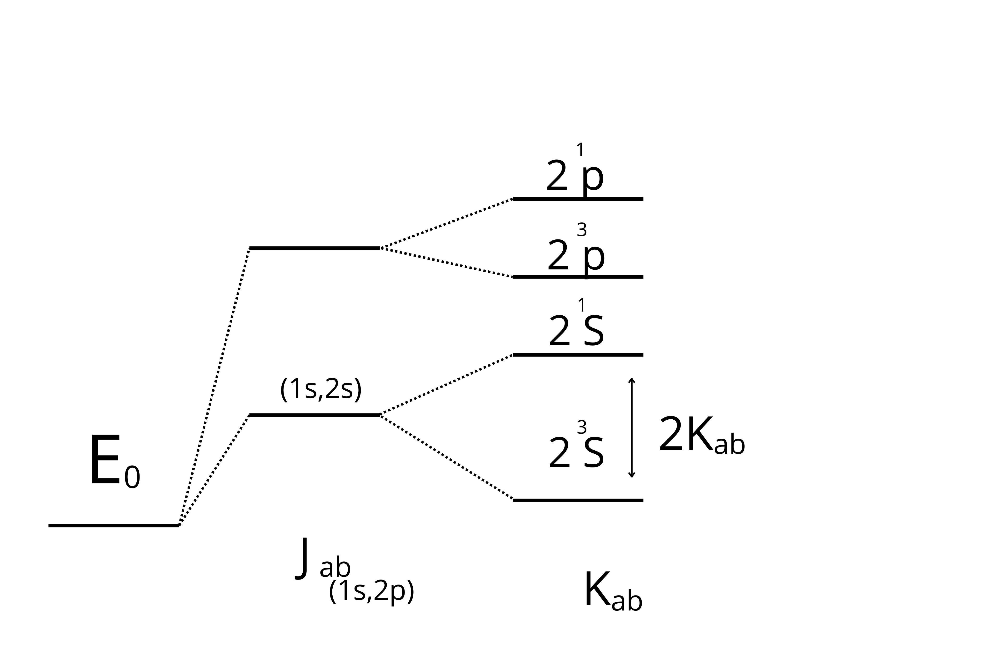

Libri interessanti: \(\begin{cases} \text{Bransedn-Joachain 'Physics of Atoms and Molecule'} \\ \text{Eisberg-Resnick} \\ \text{Roberto Derenzi 'Struttura della materia'}\\ \text{Simone Franchetti 'Elementi della struttura della materia'}\end{cases}\)
(1) orbite circolari (2) \(L=m \vec{r} \times \vec{v}=n \hbar \) con \(n=1,2,3,...\) (3) la carica non spiraleggia verso il nucleo (4) l'atomo può assorbire o emettere radiazioni solo se la frequenza è commisurata con la differenza di energie: \(h \lambda=\frac{hc}{\lambda}=E_f-E_{i}\)
\(\frac{Ze^2}{4\pi \varepsilon_0 r^2}=\frac{mv^2}{r}=...\)
si ha che \(\left|\vec{L}\right|=mrv\)
\(...=\frac{Lv}{r^2}=\frac{n\hbar v}{r^2}\)
quindi si ha che \(vc_n=\frac{Z e^2}{4\pi \varepsilon_0 \hbar n}\) e \(r_n=\frac{4\pi \varepsilon_0 \hbar^2 n^2}{Z e^2 m}\)
per \(n=1\) si ha che \( r_1=a_0 \text{(raggio di Bohr)}=\frac{4\pi \varepsilon_0 \hbar^2}{Z e^2 m}\) si trova che \(a_0 \sim 0.53 \overset{o}{\text{A}}\) e \(v_{n=1} \sim 10^6 \frac{m}{sec}\)
\(E=\frac{1}{2} m v_n^2- \frac{Ze^2}{4\pi \varepsilon_0 r_n}=-\frac{m}{2} {\left( \frac{Ze^2}{4\pi \varepsilon_0}\right)}^2\frac{1}{n^2}\)
Quando n va all'infinito l'energia va zero
Per n=1 e Z=1, \(E_1=-13.6 eV=1Ry=\frac{1}{2} Ha\) che è l'energia dello stato fondamentale dell'atomo di idrogeno, che chiamiamo un 1 Rydberg o mezzo Hattry (Rydberg\(\equiv\)unità atomiche)
Per n=2 e Z=1, \(E_2=-3.39 eV \)
Per n=3 e Z=1, \(E_3=-1.51 eV\)
Un elettrone assorbito/emesso può essere avere energia pari alla differenza di questi livelli
\(h\mu=\frac{hc}{\lambda}=E_f-E_i\)
\(\frac{1}{\lambda_{ab}}=\frac{m_e}{4\pi c\hbar}{\left( \frac{e^2}{4\pi \varepsilon_0 \hbar}\right)}^2 Z^2\left[\frac{1}{n^2_a}-\frac{1}{n^2_b}\right]\)
\(\frac{m_e}{4\pi c\hbar}{\left( \frac{e^2}{4\pi \varepsilon_0 \hbar}\right)}^2=R_H^{\infty}\) raggio di Rydberg \(R_H=109737 cm^{-1}\)
Cosa significa l'infinito? stiamo assumendo che la massa del nucleo è infinitamente più grande dell'elettrone
Per fare le cose fatte ad hoc, bisogna guardare il problema nella massa ridotta quindi in realtà \(E=\frac{1}{2}\mu v^2+...\) dove \(\mu=\frac{M_N m_e}{M_N +m_e}\sim m_e\)
quindi in realtà il raggio di Rydberg è \(R_H=109677,58 cm^{-1}\)
La struttura fine degli spettri, ossia la sdoppiatura delle righe spettrali, è dovuta ad effetti relativistici. La distanza tra due sdopiiature circa è \(0.1 \overset{\text{o}}{\text{A}}\). Nel modello della struttura fine si ha anche \(\frac{\Delta E}{E} \sim 10^{-4}\)
Effetti relativistici sono governati da una costanza: la costante della struttura fine. \(\alpha=\frac{e^2}{4\pi \varepsilon_0 \hbar c}=\frac{1}{137} \text{per i teorici}=1\)
_________________
\(\hat{H}=\frac{\hat{\vec{p}}^2}{2 \mu}+\hat{V}(\hat{\vec{x}}) \hat{H}\ket{\Psi}=\ket{\Psi}\)\)
\(\braket{\vec{x}}{\Psi}=\Psi (\vec{x})\)
\({-\frac{\hbar^2}{2\mu}\frac{1}{r}\frac{\partial^2}{\partial r^2} r-\frac{\hbar^2}{2\mu r^2}\left[ \frac{1}{\sin{\theta}}\frac{\partial}{\partial \theta} (\sin{\theta}\frac{\partial}{\partial \theta})+\frac{1}{\sin{\theta}^2}\frac{\partial^2}{\partial \varphi^2}\right]+V(r)}\Psi(r,\theta,\varphi)=E\Psi(r,\theta,\varphi)\)
\(\hat{H}=\frac{\hat{p_r}^2}{2\mu}+\frac{\hat{L}^2}{2\mu r^2}+\hat{V}(r)=\frac{\hat{p_r}^2}{2\mu}+\hat{V_{eff}}(r)\)
\(\Psi(r,\theta,\varphi)=\braket{\vec{x}}{\Psi}=R(r)Y(\theta,\varphi)\)
\(\hbar^2 \left[ \frac{1}{\sin{\theta}}\frac{\partial}{\partial \theta} (\sin{\theta}\frac{\partial}{\partial \theta})+\frac{1}{\sin{\theta}^2}\frac{\partial^2}{\partial \varphi^2}\right]=\hat{L}^2\)
\(\hat{L}^2\ket{l,m_l}=\hbar^2 l (l+1)\ket{l,m_L}\)
\(\hat{L_z}=-i\hbar\frac{\partial}{\partial \varphi }\)
\(\hat{L_z}=\ket{l,m_l}=\hbar m_l\ket{l,m_l} \braket{\theta,\varphi}{l,m_l}=Y_l^{m_l} (\theta,\varphi)\)
\(-\hbar^2\left[ \frac{1}{\sin \theta} \frac{\partial}{\partial \theta} (\sin \theta \frac{\partial}{\partial \theta} )+\frac{1}{\sin^2 \theta} \frac{\partial^2}{\partial \varphi^2}\right] Y_l^{m_l} (\theta,\varphi) =\hbar^2 l(l+1) Y_l^{m_l} (\theta,\varphi)-i\hbar \frac{\partial}{\partial \varphi} Y_l^{m_l} (\theta,\varphi)=\hbar m_l Y_l^{m_l} (\theta,\varphi)\)
\(Y_l^{m_l} (\theta,\varphi)=\sqrt{\frac{(2l+1)(l-m_l)!}{4\pi(l+m_l)!}}P_l^{m_l}(\cos \theta)e^{i m_l \varphi}\)
il \(4 \pi\) ricorda l'angolo solido
se prendiamo due armoniche sferiche: \(\int_0^{\pi}\int_{-\pi}^{\pi}\sin \theta d\theta d\varphi Y_l^{m_l} (\theta,\varphi)\)\(Y_{l'}^{m_l'} (\theta,\varphi) =\int_0^{\pi}\int_{-\pi}^{\pi} d\Omega Y_l^{m_l} (\theta,\varphi)Y_{l'}^{m_l'} (\theta,\varphi)=\delta_{l,l'}\delta_{m_l,m_l'}\)
\(Y_0^0 (\theta,\varphi)=\frac{1}{\sqrt{4\pi}}\)
\(Y_1^0 (\theta,\varphi)=1/2 \sqrt{\frac{3}{\pi}} \cos \theta\)
\(Y_1^1 (\theta,\varphi)=1/2 \sqrt{\frac{3}{\pi}} e^{\pm i \varphi}\)
\(\Psi (r, \theta,\varphi)=R(r)Y_l^{m_l} (\theta,\varphi) \)
\(\left[- \frac{\hbar^2}{2\mu r}\frac{d^2}{dr^2}r +\underbrace{\frac{\hbar^2 l (l+1)}{2 \mu r^2} -\frac{Ze^2}{4 \pi \varepsilon_0 r} }_{V_{eff}^l(r)} \right] R(r)=E\cdot R(r)\)\(R_{n,l}(r)=\frac{U(r)}{r}\), \(U_{n.l}\) con \(n=1,2,3\) e \(l \le n-1\)
\(\left[-\frac{\hbar^2}{2\mu}\frac{d^2}{dr^2}+V_{eff}^l (r)\right]U(r)=E U(r)\)
condizione al contorno: \(U(r)\rightarrow 0\) \( r \rightarrow \infty\)
Possiamo parlare dei numeri quantici e hanno un valore perchè sì abbiamo un a equazione differenziabile ma soprattutto perchè ci sono queste condizoni al contorno: vogliamo soluzione che stanno nel potenziale, ma non deve collassare nel nucleo: quindi \(U^{l+1}(r)\rightarrow 0\) \( r \rightarrow 0\) non ho probabilità di trovare l'elettrone nel nucleo. L'energia quantizzata e gli autovalori che ci ha dato Bohr: \(E_n=\frac{1}{2n^2}\frac{Z^2}{(4 \pi \varepsilon_0)^2}\frac{\mu e^4}{\hbar^2}\)
\(R_{n,l} (r)=\mathscr{C} {\left(\frac{Z}{n a_0}\right)}^{3/2} {\frac{Zr}{n a_0}}^l e^{-\frac{Zr}{n a_0}} \mathscr{L}_{n-l-1}^{l(l+1)}\)
\(R_{2,1} (r)=\frac{1}{\sqrt{24}} {\left(\frac{Z}{2 a_0}\right)}^{3/2} \frac{Zr}{2 a_0} e^{-\frac{Zr}{2 a_0}}\)
\(V_{eff} (r)=\frac{\hbar^2 l (l+1)}{2 \mu r^2}-\frac{Ze^2}{4\pi \varepsilon_0 r}\)
\(R_{n,l} (r)=\frac{U_{n,l} (r)}{r}\)
\(\int_0^{+\infty} r^2 \left| R_{n,l} (r)\right|^2dr=1=\int_0^{+\infty} dr \left| U_{n,l} (r)\right|^2\) \(d^3 r=r^2 \sin \theta d\theta d\varphi dr \)
\(P_{n,l}=r^2\left|R_{n,l} (r)\right|^2 \left[r,r+dr\right]\)
\(\Psi_{m,l,m_l}=R_{n,l} Y_l^{m_l}\)
\(\langle r^{\alpha} \rangle_{n,l}=\int_0^{\infty} r^{\alpha} P_{n,l} (r) dr\)
Somiglianze tra il modello di Bohr e quello di Schroedinger: sia l'energia sia la probabilità abbia una certa distanza è la stessa

\(\bar{r}=\langle r\rangle_{1,0} \leq r_{max}=\frac{3}{2} a_0\)
\(Y_{n,l,m_l} (r,\theta ,\varphi)=\braket{\vec{x}}{\Psi}R_{n,l} (r) Y_l^{m_l} (\theta ,\varphi)\)
\(n=1,2,3,4....\); \(l \le n-1\); \(m_l=\underbrace{-l,-l+1,...,0,...l-1,l}_{2l+1}\)
\(E_n \sim \frac{1}{n^2}\)
\(deg(n)=\sum_{l=0}^{n-1}(2l+1)=2\sum_{l=0}^{n-1} l +n=2 \frac{n(n-1)}{2}+n=n^2\)
Ci sono i seguenti operatori \(\left[ \hat{L_i},\hat{L_j}\right]=i\hbar \sum_k \varepsilon_{ijk}\hat{L_k}\)
\(\hat{L} \ket{l,m_l}=\hbar \sqrt{l(l+1)} \ket{l,m_l}\)
\(\hat{L_z} \ket{l,m_l} =\hbar m_l \ket{l,m_l}\)

Come si può usare il momento angolare per misuare gli effetti sperimentalmente? dal punto di vista l'lettrone che gira è una corrente sottoforma di spira e quindi posso associare un campo magnetico e di conseguenza magnetico. Ma questo vale anche dal punto di vista qunatistica. Per ogni momeento angolare è associato un momento magnetico, per misurare gli effetti della quantizzazione. Vediamo questi effetti, le cose non tornavano e abbiamo introdotto lo spin.
Elettrone in orbita circolare di raggio r in senso orario (L entra nel computer) mentre il momento magnetico è uscente dal computer
\(\vec{\mu}=i \vec{A}\)
il segno meno è per l'elettrone \(i=-\frac{e}{T}=\frac{e}{2 \pi r}v\)
\(\mu=-\frac{e}{2}rv\) abbiamo ottenuto quasi il momento angolare quindi moltiplico per m \(\rightarrow \frac{e}{2}rv \frac{m_e}{m_e}=-\frac{eL}{2m_e}=-\frac{e \hbar}{2 m_e \hbar}L\)
Chiamiamo \(\mu_B=\frac{e \hbar}{2 m_e} \) magnetone di Bohr \(\sim 10^{-23} amp \cdot m^2\)
quindi \(\vec{\mu}=-\color{rgb(30, 20, 222)}g_l\color{black}\frac{\mu_B}{\hbar}\) con il fattore di Landè \(g_l=1\)
\(\hat{L}\) è quantizzato, allo stesso modo anche il momento magnetico
\(\mu_l=\frac{g_l \mu_B}{\hbar}\hbar \sqrt{l(l+1)}=g_l \mu_B\sqrt{l(l+1)}\)
\(\mu_{l_z}=-g_l\mu_B m_l\)
il momento magnetico vuole allinearsi al campo magnetico: il meno indica il minimo di energia \(\Delta E=-\vec{\mu}\vec{B_{ext}}\) questa cosa è detto acccopiamento di Zeemann
Mandiamo cose quantizzate, se l'accopiamento si accorge di questa quantizzazzione, al di là del magnete c'è un "rivelatore" che mi dice se è davvero quantizzato oppure no
Gli spot rivelati dal rivelatore dipende dai numeri possibili di \(m_l\): quindi ci si deve aspettare \(2l+1\) spot
Prendiamo un dipolo elettrico (due cariche distazne d) \(F_{tot}=q E(z_1)-q E(z_2)\)
Dato che c'è un gradiente \(\left(\frac{\partial}{\partial B_z} \neq 0\right) \rightarrow E(z_1)=\neq E(z_2)\) e quindi \(q\left[ E(z_2)+\frac{\partial E_z}{\partial z} \overbrace{z_1-z_2}^{d}\right] -qE(z_2)\)
quindi \(F_z=\mu_{l_z} \frac{\partial B_z}{\partial z}\)
Quello che c'è sopra è breve l'esperimento di Stein-Gerlach
Pauli introduce lo spin: \(\hat{S}^2\ket{s,m_s} =\hbar^2 s(s+1) \ket{s,m_s}\) e \(\hat{S_z}=\hbar m_s \ket{s,m_s}\)
Per gli elettroni \(s=\frac{1}{2}\)
Possiamo definire un momento magnetico\(\hat{\vec{\mu_s}}=-\color{rgb(40, 40, 221)}g_s\color{black}\frac{\mu_B}{\hbar}\hat{\vec{S}}\) con \(g_s=2\)
\(\mu_{s_z}=-g_s \mu_B m_s\) con \(m_s=\pm \frac{1}{2}\)
\(F_z=\pm \mu_B\frac{\partial B_z}{\partial z}\)
Facciamo ora la simulazione dell'esperimento di Stein-Gerlach
Siamo in un forno di 400K. Escono atomi di idrogeno con una certa velocità v. La lunghezza del magnete è 1m. inoltre \(\frac{\partial B_z}{\partial z} =10 \frac{T}{m}\)
\(T=\frac{1}{2}M {v_x}^2=2 k_B T \rightarrow v_x=\sqrt{\frac{4 k_B T}{M}}\)
\(t=\frac{L}{v_x}=L\sqrt{\frac{M}{4 k_B T}}\)
\(\Delta_z=\frac{1}{2}a_z t^2=\frac{1}{2}\frac{F_z}{M}\frac{M L^2}{4 k_B T}=\frac{\pm \mu_B \frac{\partial B_z}{\partial z} L^2}{8 k_B T}=\pm 2,1\cdot 10^{-3}m \sim 2mm\)
\(D\sim 4mm\sim 0,5 cm\)
\(E_n=\frac{13.6 eV}{n^2}\)
\(E_1=13.6 eV\),\(E_2=3,39 eV\)
\(\frac{n_2 (T)}{n_1 (T)}=\frac{e^{-\frac{E_2}{kT}}}{e^{-\frac{E_1}{kT}}}=e^{-1,18*10^{-5} K/T} \rightarrow T\sim 10^5 K\)
n=1 l=0 \(R_{1,0}(r)=\mathscr{L} \left( \frac{Z}{a_0} \right)^{3/2}e^{-Z r/a_0}\)
\(P_{1,0} (r)=r^2 |R_{1,0}(r)|^2=4 r^2 \left( \frac{Z}{a_0} \right)^{3}e^{-2Z r/a_0}\)
\(\frac{dP_{1,0}(r_{max})}{dr}=4 \left( \frac{Z}{a_0} \right)^{3} \left[ 2 r_{max}-\frac{2Z}{a_0} r^2_{max} \right]e^{\frac{-2Z r_max}{a_0}}=0\)
\(r_max=\frac{a_o}{Z} \sim 0,53 \frac{\overset{\text{o}}{\text{A}}}{Z} \)
\(\langle r \rangle_{1,0}=\int_0^{\infty} r P_{1,0}(r)dr=...=\frac{3a_0}{2 Z}\)
abbiamo un nucleo con una carica ed un elettrone che ci gira intorno con una certa orbita di raggio r (in senso antiorario)
sediamoci nell'elettrone: il protone gira attorno a me: se l'elettrone è fermo non ha momento angolare orbnitale perchè è fermo, quindi l'unico momento che l'eltrrone sente è quello dello spin. Usiamo la legge di Ampere: \(\vec{B}=-\frac{\mu_0}{4\pi} \frac{\vec{j} \times \vec{r}}{r^3}=\frac{Ze}{4 \pi} \mu_0 \vec{v} \times \frac{\vec{r}}{r^3}\)
\(\vec{L}=m \vec{r} \times \vec{v}\)
quindi \(\vec{B}=\frac{Z e^2}{4\pi m \varepsilon c^2} \frac{\vec{L}}{r^2r}=\frac{E\vec{L}}{mec^2r}=\frac{\vec{L}}{mec^2r}\frac{dV(r)}{dr}\)
\(\Delta E=-\vec{\mu_s} \cdot \vec{B}\)
\(\vec{\mu_s}=\frac{g_s \mu_B}{\hbar}\vec{S}\)
\(\Delta E=\color{rgb(0,217,98)}\frac{1}{2}\color{black}\frac{g_s \mu_B}{emc^2\hbar}\frac{dV(r)}{dr} \frac{\vec{S}\cdot \vec{L}}{r}\)
bisogna inserire una precessione di Thomas \(\color{rgb(0,217,98)}\frac{1}{2}\)
problema dei sistemi di riferimenti acceleratio
\(\hat{H_{s_o}}=\frac{g_s \mu_B}{2 e mc^2 \hbar }\frac{d V(\hat{r})}{r}\frac{\hat{\vec{S}}\cdot\hat{\vec{L}}}{\hat{r}}\)
\(\mathscr{J}_l^m (\theta, \varphi) = \begin{cases} \sqrt{\frac{l+m_j+1/2}{2l+1}}Y_l^{m_l} \begin{pmatrix} 1 \\ 0 \end{pmatrix}+\sqrt{\frac{l-m_j+1/2}{2l+1}}+Y_l^{m_j+1/2} \begin{pmatrix}0\\1\end{pmatrix} con j=l+1/2 && \sqrt{\frac{l-m_j+1/2}{2l+1}}Y_l^{m_l} \begin{pmatrix} 1 \\ 0 \end{pmatrix}+\sqrt{\frac{l+m_j+1/2}{2l+1}}+Y_l^{m_j+1/2} \begin{pmatrix}0\\1\end{pmatrix} con j=l-1/2\end{cases}\)
\(D=e^{-\frac{\hat{\vec{S}}\cdot \vec{n}g}{\hbar}}\) \(\hat{n}=\hat{n} (\theta, \varphi)\)questo è il generatore delle traslazioni spaziali
\(D (\sigma_z) D (\sigma_y) \begin{pmatrix} 1 \\ 0 \end{pmatrix}=\cos{\theta /2} e^{-i \Phi/2} \begin{pmatrix} 1 \\ 0 \end{pmatrix}+\sin{\theta/2}e^{-i \Phi/2} \begin{pmatrix} 0 \\ 1 \end{pmatrix}\)
\(\begin{cases} l=0 \rightarrow s& l=1 \rightarrow p l=2 \rightarrow d \text{(elementi di transizioni)} l=3 \rightarrow f \text{(sia spinorbita sia interazione coulombiana)} \end{cases}\)
\(np_J\) per esempio \(2p_{3/2} \) che vuol dire che n=2 l=1 J=3/2
-.-. .. .- ---!
\(\left[ \underbrace{ \frac{\hat{p}^2}{2m}+V( \hat{r} )}_{E_n^{(0)}=\frac{-13,6 eV}{n^2}} \underbrace{-\frac{\hat{p}^4}{8 m^3c^2}}_{\text{mass-velocity correction}}+\frac{1}{2 m^2 c^2}\frac{dV}{dr}\frac{\hat{\vec{S}} \cdot \hat{\vec{L}}}{r} +\underbrace{\frac{\pi \hbar^2}{2 m^2c^2} \frac{Ze^2}{4 \pi \varepsilon_0}\delta (\hat{r})}_{\text{termine di Darwin}} \right]\ket{\Psi}=E \ket{\Psi}\)
la mass velocity correction deriva da \(E= \sqrt{p^2c^2+m^2c^4}=\sqrt{m^2c^4\left(1+\frac{p^2c^2}{m^2c^4}\right)}\)
faccio l'espansione di taylor di \(\sqrt{1+x} \sim 1+x/2-x^2/8\) quindi.... \(\sim mc^2 \left[1+\frac{p^2c^2}{2m^2c^4}-\frac{1}{8}\left(\frac{p^2c^2}{m^2c^4}\right)^2\right]=mc^2+\frac{p^2}{2m}-\frac{p^4}{8m^3c^2}\)
il termine di Darwin: \(\nabla^2 V_c (r) \sim \nabla^2 \frac{1}{r} \sim \delta (\vec{r})\)
\(\nabla \cdot E =\rho\rightarrow -\nabla^2 V=\frac{\rho}{\varepsilon_0}= \frac{q}{\varepsilon_0} \delta \vec{r}\)
\(H=H^{(0)}+\hat{H'}\)
\(E_n^{(0)}=E_n^{(0)}+\bra{n^{(0)}}H'\ket{n^{(0)}}\)
le nostre \(\Psi^{(0)}\) imperturbate sono \(\Psi_{n,l,j,m_j}\)\)
\(\hat{H}_{rel}=-\frac{\hat{p}}{8m^3c^2}\)
\(\Delta E_{rel}=\bra{n,l,j,m_j}H_{rel}\ket{n,l,j,m_j}=-\frac{1}{2mc^2}\bra{n,l,j,m_j}\underbrace{\left(\frac{\hat{p}^2}{2m}\right)^2}_{\left(\hat{H_0}+\frac{Ze^2}{4\pi \varepsilon_0 r}\right)^2} \ket{n,l,j,m_j}=-\frac{1}{2mc^2}\left[{E_n^{(0)}}^2+2E_n^{(0)}\frac{Ze^2}{4 \pi \varepsilon_0}\langle \frac{1}{r}\rangle_{n,l}+\left(\frac{Ze^2}{4 \pi \varepsilon_0}^2\right)\langle \frac{1}{r^2}\rangle_{n,l}\right]\)
in \(\Psi_{n,l,m_l}=R_{n,l} Y_l^{m_l}\) si ha \(\langle\frac{1}{r}\rangle=\frac{Z}{a_0 n^2}\) e \(\langle\frac{1}{r^2}\rangle=\frac{Z}{a_0^2n^3 (l+1/2)}\)
....\( -E_n^{(0)}\frac{(Z \alpha)^2}{n^2}\left[\frac{3}{4}-\frac{n}{l+1/2}\right]\)
\(\Delta E_{so}=\bra{ n,l,k,m_j} \frac{\psi (r)}{2} (\hat{J}^2 -\hat{S}^2-\hat{L}^2)\ket{n,l,j,m_j}=\frac{\hbar^2}{2}\bra{n,l,j,m_j}\psi (r) \ket{n,l,j,m_j}[j(j+1)-l(l+1)-s(s+1)]=\frac{\hbar^2}{4m^2c^2}\frac{Ze^2}{4 \pi \varepsilon_0} \langle \frac{1}{r^3}\rangle [j(j+1)-l(l+1)-s(s+1)] \)
\(\langle \frac{1}{r^3}\rangle=\frac{Z^3}{a_0^3 n^3l(l+1/2)(l+1)}\)
....\(=-\frac{E_n^{(0)}}{2n} (Z \alpha )^2 \frac{[j(j+1)-l(l+1)-3/4]}{l(l+1/2)(l+1)}\)
\(\Delta E_{Darwin}=\bra{n,l,j,m_j}\frac{\pi \hbar^2}{2m^2 c^2}\frac{Ze^2}{4 \pi \varepsilon_0}\delta (\vec{r}) \ket{4 \pi \varepsilon_0}=\frac{\pi \hbar^2}{2m^2c^2}\frac{Ze^2}{4 \pi \varepsilon_0}\left|R_{n_l} (r=0) \right|^2=-E_n^{(0)} \frac{(Z \alpha)^2}{n^2}\)
\(V_{eff}=\frac{1}{r}+\frac{l(l+1)}{r^2}\)
abbiamo calcolato la vera struttutura fine finale con effetti relativistici
\(\Delta E= \Delta E_{rel}+ \Delta E_{so}+ \Delta E_{Darwin}=E_n^{(0)} \frac{(Z \alpha)^2}{n^2}\left[\frac{n}{j+\frac{1}{2}}-\frac{3}{4}\right]\)
\(\hat{H_{so}}=\frac{\hat{\vec{S}}\cdot\hat{\vec{L}}}{\hat{r}}\) con \(n=2, l=1, s=1/2\)
\(\vec{S}\cdot\hat{\vec{L}} \sim \hbar \sqrt{s(s+1)} \hbar \sqrt{l (l+1)} \mathbb{1} \sim \hbar \mathbb{1} \)
\(V=\frac{Ze^2}{4 \pi \varepsilon_0 r} \rightarrow\frac{dV}{dr}=\frac{Z e^2}{\hat{\vec{S}} r^2}\)
\(\mu_B=\frac{e\hbar}{2m}\)
\(\langle r^{-3}\rangle_{2,1}=\int_0^{+\infty} r\frac{1}{r^3}P_{2,1} (r)=\int_0^{+\infty}dr \sim \frac{1}{(3a_0)^3} \)
\( \Delta E_{so}=\bra{n=2,l=1}\hat{H}\ket{n=2,l=1}=\frac{g_s \mu_B}{2emc^2\hbar} \bra{2,1}\frac{dV}{dr}\frac{\hat{\vec{S}}\cdot\hat{\vec{L}}}{\hat{r}}\ket{2,1} = \frac{e^2 \hbar^2}{8m^2c^2 \pi \varepsilon_0}\bra{2,1}\frac{1}{r^3}\ket{2,1}\)
la spinorbita è utile/è un effetto che si verifica nella struttura fine
\(\hat{\vec{J}}=\hat{\vec{L}}+\hat{\vec{S}}\) \([\hat{\vec{L}},\hat{\vec{S}}]=0\)
\(\hat{\vec{J}}^2=\hat{\vec{L}}^2+\hat{\vec{S}}^2+2\hat{\vec{L}}\cdot\hat{\vec{S}}\)
operatore di spinorbita: \(\hat{\vec{L}}\cdot\hat{\vec{S}}=\frac{1}{2}(\hat{\vec{J}}^2-\hat{\vec{L}}^2-\hat{\vec{S}}^2)\)
\(\hat{H_{so}}=\frac{g_s \mu_B}{2em_e^2\hbar}\frac{dV(r)}{dr}\frac{1}{2r}(\hat{\vec{J}}^2-\hat{\vec{L}}^2-\hat{\vec{S}}^2)\)
\(\ket{l,m_l,m_s}\rightarrow \ket{l,s,j,m_j}\)
\(\hat{\vec{J}}^2\ket{l,s,j,m_j}\rightarrow \hbar \sqrt{l(l+1)}\ket{l,s,j,m_j}\)
\(\hat{\vec{J}}_z \ket{l,s,j,m_j}\rightarrow \hbar m_j \sqrt{l(l+1)}\ket{l,s,j,m_j}\)
in generale \(m_j=m_l+m_s\) per un elettrone invece \(m_j=m_l+1/2\) dato che \(|l-s| \le j \le |l+s|\)
\(\ket{l,s,j,m_j}=\sum_{m_l,m_s} \ket{l,s,m_l,m_s} \underbrace{\bra{l,s,m_l,m_s}\ket{l,s,j,m_j}}_{\text{coeff. di Clebsh-Gordan}}\)
\(\bra{\theta , \varphi}\ket{l,s,j,m_j}=\mathscr{Y}_j^{m_j} (\theta , \varphi)=\sum_{m_l=-l}^{+l} \sum_{m_s=-s}^{+s} Y_l^{m_l} (\theta , \varphi) \chi_{s,m_s} \mathscr{C}\)
\(\alpha \begin{pmatrix}1\\0\end{pmatrix}+\beta\begin{pmatrix}0\\1\end{pmatrix}\)
\(\chi_{s=1/2, ms=+1/2}=\begin{pmatrix}1\\0\end{pmatrix}=\ket{s=1/2,m_s=1/2}\)
\(\chi_{s=1/2, ms=-1/2}=\begin{pmatrix}0\\1\end{pmatrix}=\ket{s=1/2,m_s=-1/2}\)
\(S_2=\frac{\hbar}{2}\begin{pmatrix}1 & 0\\0&-1\end{pmatrix}\)
Le linee spettrali non sono delta di Dirac ma hanno un certo spessore
Principio di indeterminazione Heisenberg
\(\Delta E \Delta t \sim \hbar \rightarrow \Delta \mu = \frac{\Delta}{h} \sim \frac{1}{2\pi \Delta t}\)
Urti (lorentziana)
gli urtii da un all'argamento lorentziamo (simile alla gaussiana): \(\Phi ( \mu) =\frac{\frac{1}{4 \pi^2}}{(\mu -\mu_0)^2+\left(\frac{\Gamma}{4 \pi^2}\right)^2} \) con \(\Gamma \propto\) rate di collisione: questi sono importanti in contesti astronomici
Effetto Dopler (gaussiana)
\( \lambda=\lambda_0\left(1\pm \frac{v}{c}\right) \rightarrow \mu=\frac{\mu_0}{1\pm \frac{v}{c}}\rightarrow \frac{\mu-\mu_0}{\mu_0}=\pm \frac{v}{c}\)
\(N(v) \propto e^{-\frac{mv^2}{2k_BT}}\)
\(\Phi (v) \propto e^{-\frac{mc^2\left(\frac{\mu-\mu_0}{\mu_0}\right)}{2k_BT}}\)
\(\Delta \mu^2_{distribuzione}=\left(\frac{\mu_0}{c}\right)^2 \frac{2k_BT}{m}\)
L'atomo idrogenoide descrive ache gli atomi alcalini tipo il sodio.
\(\ket{\Psi}=\ket{\Psi_1,\Psi_2}\ket{s_1,m_{s_1},s_2,m_{s_2}}\)
\(\hat{H}\ket{\Psi_1,\Psi_2}=E\ket{\Psi_1,\Psi_2}\)
\(\bra{\vec{x_1},\vec{x_2}}\hat{P_{1,2}}=\bra{\vec{x_2},\vec{x_1}}\)
\(\bullet \hat{P_{12}}\hat{H}\hat{P_{12}^{-1}}=\hat{H}\)
\(\bullet \hat{P_{12}} \hat{P_{12}}=\mathbb{1} \)
\(\bullet \hat{P_{12}}\hat{H}\hat{P_{12}}=\hat{H}\) (conseguenza delle due precedenti)
\(\bullet \left[ \hat{H},\hat{P_{12}}\right]=0\)
\(\hat{P_{12}} \ket{\Psi_1,\Psi_2}=\lambda\ket{\Psi_1,\Psi_2}\)
\(\ket{\Psi_1,\Psi_2}=\underbrace{\hat{P_{12}}\hat{P_{12}}}_{\mathbb{1}} \ket{\Psi_1,\Psi_2}=\lambda^2 \ket{\Psi_1,\Psi_2}\) con \( \lambda=\pm 1 \)
le nostre funzioni possono essere o simmetriche o antisimmetriche
\(\Psi (\vec{x_1},\vec{x_2})=\bra{\vec{x_1},\vec{x_2}}\ket{\Psi_1,\Psi_2}=\bra{\vec{x_1},\vec{x_2}}\hat{P_{12}}\hat{P_{12}}\ket{\Psi_1,\Psi_2}=\bra{\vec{x_1},\vec{x_2}}\ket{\Psi_1,\Psi_2}=\pm \Psi (\vec{x_1},\vec{x_2})\)
\(\ket{\Psi_1,\Psi_2}\overset{!}{=}\ket{\Psi_1}_1\ket{\Psi_2}_2\equiv \Psi_{n_1,l_1,m_{l_1}} (\vec{x_1}) \Psi_{n_2,l_2,m_{l_2}} (\vec{x_2}) {\color{50,230,29}\neq} \ket{\Psi_1}_2\ket{\Psi_2}_1\)
\(\boxed{\ket{\Psi_1,\Psi_2}_{\pm}=\frac{\ket{\Psi_1}_1\ket{\Psi_2}_2-\ket{\Psi_1}_2\ket{\Psi_2}_1}{\sqrt{2}}}\)
Perchè questa cosa ha le giuste simmetrie?
\( \bra{\vec{x_1},\vec{x_2}}\hat{P_{12}}\ket{\ket{\Psi_1,\Psi_2}}_{\pm}=\braket{\vec{x_2},\vec{x_1}}{\ket{\Psi_1,\Psi_2}}_{\pm}=...=\boxed{\pm \braket{\vec{x_1},\vec{x_2}}{\ket{\Psi_1,\Psi_2}}_{\pm}}\)
\(\Psi (\vec{x_1},\vec{x_2})=\pm \Psi (\vec{x_2},\vec{x_1})\)
La parte orbitale, se la mia hamiltoniana ha come simmetria quella dello scambio delle particelle, può essere PARA (+) o ORTO (-)
\( \ket{\Psi_1,\Psi_2}_{\pm}=\frac{\ket{\Psi_1,\Psi_2}_2\pm\ket{\Psi_1,\Psi_2}_1}{\sqrt{2}} \)
\( \Psi{\uparrow }= \begin{pmatrix} 1 \\ 0 \end{pmatrix} = \chi_{s=1/2,m_s=+1/2}=\ket{1/2,+1/2} \)
\( \Psi{\downarrow }= \begin{pmatrix} 0 \\ 1 \end{pmatrix} = \chi_{s=1/2,m_s=-1/2}=\ket{1/2,-1/2} \)
\(\hat{\vec{S}}=\hat{\vec{S_1}}+\hat{\vec{S_2}}\)
\(\ket{S=1,S_z=1}=\ket{\uparrow}_1\ket{\uparrow}_2\): tripletto
\(\ket{S=1,S_z=0}=\frac{\ket{\uparrow}_1\ket{\downarrow}_2+\ket{\downarrow}_1\ket{\uparrow}_2}{\sqrt{2}}\): tripletto
\(\ket{S=1,S_z=-1}=\ket{\downarrow}_1\ket{\downarrow}_2\): tripletto
\(\ket{S=0,S_z=0}=\frac{\ket{\uparrow}_1\ket{\downarrow}_2-\ket{\downarrow}_1\ket{\uparrow}_2}{\sqrt{2}}\): singoletto
\(\ket{\Psi^{TOT}}_{+}=\ket{\Psi}_{+}\chi_{S=0,S_z=0}\)
\(\ket{\Psi^{TOT}}_{-}=\ket{\Psi}_{-}\chi_{S=1,S_z=\begin{cases}+1\\0\\-1\end{cases}}\)
\(\underbrace{\left[\frac{\hat{p}}{2m}-\frac{Z^2}{4 \pi \varepsilon_0 r_1}\right]}_{ \ket{\Psi_1}=\ket{n_1,l_1,n_{l_1}}} + \underbrace{ \left[\frac{\hat{p}}{2m}-\frac{Z^2}{4 \pi \varepsilon_0 r_2}\right]}_{\ket{\Psi_2}=\ket{n_2,l_2,n_{l_2}}} \ket{\Psi}=E\ket{\Psi} \)
\(E^0=E_1+E_2=-\frac{m}{2}\left(\frac{Ze^2}{4 \pi \varepsilon_0 \hbar}\right)^2 \left(\frac{1}{n_1^2}+\frac{1}{n_2^2}\right)\)
\(\ket{1,0,0}\) e \( \ket{1,0,0} \)
\(\ket{\Psi}= \ket{1,0,0} \ket{1,0,0} \)
\( \Psi^0 (\vec{x_1},\vec{x_2} )=\bra{\vec{x_1},\vec{x_2}} \ket{\Psi}=\Psi_{1,0,0}(\vec{x_1} ) \Psi_{1,0,0}(\vec{x_2} )=\frac{1}{\pi}\left(\frac{Z}{a_0}\right)^3 e^{-\frac{Z}{a_0}(|\vec{x_1}|+|\vec{x_2}|)}\)
\(E_0=-8 Ry=-4 a.u.\) (atom units) \( =-108,8 eV\)
\(\Delta E =\frac{e^2}{4 \pi \varepsilon_0} \bra{1,0,0;1,0,0}\frac{1}{|\vec{x_1}-\vec{x_2}|}\ket{1,0,0;1,0,0}=\frac{1}{4 \pi \varepsilon_0}\int d^3 x_1 \int d^3 x_2 \frac{[-e| \Psi_{1,0,0} (\vec{x_1})|^2][ -e| \Psi_{1,0,0} (\vec{x_2})|^2]}{|\vec{x_1}-\vec{x_2}|} = \frac{1}{4 \pi \varepsilon_0}\int d^3 x_1 d^3 x_2 \frac{\rho (\vec{x_1} ) \rho (\vec{x_2} )}{|\vec{x_1}-\vec{x_2}|}\) questa non è altro che l'interazione elettrostatica tra due nuvole di carica, formalmente il termine di Hartree
\(\int d^3 x_2 \frac{\rho (\vec{x_1} ) \rho (\vec{x_2} )}{|\vec{x_1}-\vec{x_2}|} =\frac{e^2}{\pi^2} \left(\frac{Z}{a_0}\right)^6 e^{-\frac{2Z}{a_0}r_1} \)
\(\int_0^{\infty} \int_0^{\pi} \int_0^{2\pi} r_2^2 \sin \theta d\theta d \Phi \frac{e^{-\frac{2Z}{a_0}r_2}}{\sqrt{r_1^2+r_2^2-2r_1r_2 \cos \theta}}=\frac{e^2}{\pi^2} \left(\frac{Z}{a_0}\right)^6 2\pi \int_0^{\infty} r_2^2 e^{-\frac{2Z}{a_0}r_1} dr_2 \int_0^{\pi} d\theta \frac{\sin \theta}{r_1^2+r_2^2-2r_1r_2 \cos \theta}\)
\(\frac{\sqrt{r_1^2+r_2^2-2r_1r_2 \cos \theta}}{r_1 r_2} \big|_0^\pi =\frac{|r_1+r_2|-|r_1-r_2|}{r_1r_2}=\begin{cases}\frac{2}{r_1}&r_2\lt r_1\\\frac{2}{r_2}&r_2\gt r_1\end{cases}\)
\(I_2 (r_1)=2\pi\left[\int_0^{r_1}dr_2 r_2^2e^{-\frac{2Z}{a_0}r_2}\frac{2}{r_1} + \int_{r_1}^{\infty}dr_2 r_2^2e^{-\frac{2Z}{a_0}r_2}\frac{2}{r_2} \right]=\frac{\pi a_0^3}{r_1 Z^3}\left[1-e^{-\frac{2Z}{a_0}r_1}\left(1+\frac{Zr_1}{a_0}\right)\right]\)
\(\Delta E=\frac{e^2 Z^3}{\pi \varepsilon_0 a_0^3} \int_0^{\infty} dr_1 r_1 e^-{\frac{2Z}{a_0}r_1}\left[1-e^{\frac{2Z}{a_0}r_1}\left(1+\frac{Zr_1}{a_0}\right)\right]\)
\(\Delta E=\frac{5e^2Z}{32 \pi \varepsilon_0 a_0}=\frac{m}{2}\frac{5}{4}\left(\frac{Ze^2}{4 \pi \varepsilon_0} \hbar \right)^2 =-\frac{5}{4}Z E_{Bohr}=\frac{5}{8}Z a.u.\) (questa è una correzione columbiana repulsivo quindi è positivo). Per l'atomo di elio si ha \(\Delta E=34 eV\)
\(E^{\text{1° ordine}}=-108,8 eV+34eV=-74,8 eV\)
\(\Psi(\vec{x_1},\vec{x_2} )=\frac{1}{\sqrt{\pi}} \left(\frac{Z_{eff}}{a_0}\right)^{3/2} e^{-\frac{Z_{eff}|\vec{x_1}|}{a_0}} \frac{1}{\sqrt{\pi}} \left(\frac{Z_{eff}}{a_0}\right)^{3/2} e^{-\frac{Z_{eff}|\vec{x_2}|}{a_0}}\)
\(Z_{eff}=Z-S\) dove \(S\) è lo schermaggio
Abbiamo sovrastiamto il termine coulombiano
\(\Phi_{Z_{eff}}=\frac{1}{\pi}{Z_{eff}}^{3}e^{-Z_{eff}(|\vec{x_1}|+|\vec{x_2}|)}\)
abbiamo una energia che dipende da una funzione \(E[\Phi_{Z_{eff}}] \ge E_0\)
Più bravo sono a parametrizzare, tanto più mi avvicino a \(E_0\), mi avvicino al limite inferiore
\(E[\Phi]=\bra{\Phi}\hat{H}\ket{\Phi}\)
\(\hat{H}\ket{\Psi_{m}}=E_m\ket{\Psi_m}\)
\(\ket{\Phi}=\sum_n c_n \ket{\Psi_n}\) con \(c_n=\bra{\Psi_n}\ket{\Phi}\)
\(\bra{\Phi}\hat{H}\ket{\Psi}=\sum_n \sum_m =c_n^*\bra{\Phi_n}\hat{H}\ket{\Psi_m}c_m=\sum_n \sum_m c_n^* c_m E_m \delta_{n,m} =\sum_n |c_n|^2 E_n \ge E_0 \sum_n |c_n|^2=E_0 \)
\(E[\Phi]=\bra{\Psi_{Z_{eff}}}-\frac{1}{2}\nabla_{r_1}^2 -\frac{1}{2}\nabla_{r_2}^2 -\frac{Z}{r_1}-\frac{Z}{r_2}+\frac{1}{\left|r_1-r_2 \right|} \ket{\Psi_{Z_{eff}}} \)
\(E[\Psi_{Z_{eff}}]=-Z^2 u.a.+\frac{5}{8} Z u.a.\)
\(\frac{\delta}{\delta Z_{eff}} E[\varphi_{Z_{eff}}]=0\)
\(\Phi_{Z_{eff}} (r_1,r_2)=\frac{Z^3e}{\pi}e^{-Ze(r_1+r_2)}\)
\(Z_{eff}=Z-S \lt Z\)
\(E \left[\Phi_{Z_{eff}}\right]=\bra{\Phi_{Z_{eff}}}-\frac{1}{2}\nabla_{r_1}^2+-\frac{1}{2}\nabla_{r_2}^2-\frac{Z}{r_1}-\frac{Z}{r_2}+\frac{1}{|r_1+r_2|}\ket{\Phi_{Z_{eff}}}\)
\(\bra{\Phi_{Z_{eff}}}-\frac{Z}{r_1}\ket{\Phi_{Z_{eff}}}=-Z\bra{\Phi_{Z_{eff}}}\frac{1}{r_1}\ket{\Phi_{Z_{eff}}}=-ZZ{eff}\)
\(\langle \frac{1}{r}\rangle=\frac{Z_{eff}}{a_on^2}\)
\(\bra{\frac{1}{\sqrt{\pi}Z_e^{3/2}}e^{-Z_{eff}r}}\frac{1}{r}\ket{\frac{1}{\sqrt{\pi}Z_e^{3/2}}}e^{-Z_{eff}r}\)
\(\bra{\Phi_{Z_{eff}}}-\frac{1}{2}\nabla_{r_1}^2 \ket{\Phi_{Z_{eff}}}\) per il teorema del Viriale fa: \(=\frac{1}{2}\langle V \rangle=\frac{1}{2}\bra{\Phi_{Z_{eff}}}-\frac{Ze}{r}\ket{\Phi_{Z_{eff}}}=+\frac{Ze^2}{2}\)
\(\left[ -\frac{1}{2}\nabla^2-\frac{Ze}{r}\right]\ket{\Phi_{Z_{eff}}}=E\ket{\Phi_{Z_{eff}}}\)
Mi manca solo il termine di interazione \(\frac{1}{|r_1+r_2|\)
\(\bra{\Phi_{Z_{eff}}}\frac{1}{|r_1+r_2|}\ket{\Phi_{Z_{eff}}}=\frac{5}{8}Z_{eff}\)
si ha quindi che \(E \left[\Phi_{Z_{eff}}\right]=Ze^2-2ZZ_{eff}+\frac{5}{8}Z_{eff}\sim 77,45 eV\)
\(\frac{d E}{d Z_{eff}}=2 Z_{eff}-2Z+\frac{5}{8}=0\)
\(Z_{eff}=Z-\overbrace{\frac{5}{16}}^{S}\)
Abbiamo definito il concetto di schermaggio
Finora ad ora abbiamo considerato lo stato fondamentale dell'idrogenoide
Ora guardiamo gli altri stati
\(n ^{2s+1}L_J\) n identifica il livello energetico più alto
Esempi: (abbiamo due eletroni)
\(\Psi_{\pm}=\frac{\ket{n_1,l_1,m_{l_1}}_1\ket{n_2,l_2,m_{l_2}}_2\pm\ket{n_2,l_2,m_{l_2}}_1\ket{n_1,l_1,m_{l_1}}_2}{\sqrt{2}}\)
\(\bullet \begin{matrix} n_1=1 & l_1=0\end{matrix}\)
\(\bullet \begin{matrix} n_2=1 & l_1=0\end{matrix}\)
L=0, S=0, simmetrica
quindi si ha \(1 ^1S_0\)
altro esempio
\(\bullet \begin{matrix} n_1=1 & l_1=0\end{matrix}\)
\(\bullet \begin{matrix} n_2=2 & l_1=0\end{matrix}\)
L=0, S=0, simmetrica
quindi si ha \(2 ^1S_0\) oppure \(2 ^3S_1\)
altro esempio
\(\bullet \begin{matrix} n_1=1 & l_1=0\end{matrix}\)
\(\bullet \begin{matrix} n_2=2 & l_1=1\end{matrix}\)
L=0, S=0, simmetrica
quindi si ha \(2 ^1P_{J=1\) oppure \(2 ^3P_{J=0,1,2}\)
nelle transizione ottiche si ha \(\Delta L=\pm 1\) e \(\Delta S=0\)
nel caso unidimensionale: una funzione simmetrica spazialmente significa che due elttroni possono stare molto vicini tra loro. Mentre una funzione antisimettrica che fa zero quando i due elettroni sono vicini, quindi nell'origine c'èn un nodo/un punto di flesso.
\(\rightarrow ^3L \text{ significa distanti mentre } ^1L \text{ significa vicini}\)
\(\Delta E_{\pm}=\ket{\Psi_{\pm}} ^{\overbrace{\downarrow }^{\ket{x_1,x_2}\bra{x_1,x_2}}}\frac{1}{|\vec{x_1}-\vec{x_2}|}\ket{\Psi_{\pm}}=\frac{1}{2}\int \int d^3x_1d^3x_2\left[\Psi_a^* (\vec{x_1}) \Psi_b^* (\vec{x_2})\pm \Psi_a^* (\vec{x_2})\Psi_b^* (\vec{x_1})\right]\frac{1}{|\vec{x_1}-\vec{x_2}|}\left[\Psi_a^* (\vec{x_1}) \Psi_b^* (\vec{x_2})\pm \Psi_a^* (\vec{x_2})\Psi_b^* (\vec{x_1})\right]=J_{ab}\pm K_{ab}\)
La funzione d'onda con il + è quella del singoletto, quella del - è quella del tripletto
\(J_{ab}=\int \int d^3x_1d^3x_2 \frac{\left|\Psi_a (\vec{x_1})\right|^2\left|\Psi_b (\vec{x_2})\right|^2}{\left|\vec{x_1}-\vec{x_2}\right|} \)
\(K_{ab}=\int \int d^3x_1d^3x_2 \frac{\Psi_a^* (\vec{x_1} ) \Psi_a^* (\vec{x_2} ) \Psi_b^* (\vec{x_1} ) \Psi_b^* (\vec{x_2} )}{\left|\vec{x_1}-\vec{x_2}\right|} \) "integrale di scambio" o "integrale di Fock": non ha nessun equivalente classico essendo che deriva dalla indistinguibilità delle particelle
\(\Delta E_{pm}= \begin{cases}J_{ab}+K_{ab} & ^1L \\ J_{ab}-K_{ab} & ^3L \end{cases} \)
la correzione per lo stato del tripletto è più bassa rispetto al caso del singoletto
-.-. .. .- ---!
\(2\vec{S_1}\cdot \vec{S_2}=S^2-S_1^2-S_2^2=S^2-\frac{3}{2}\rightarrow \vec{S_1}\cdot \vec{S_2}=\frac{1}{2}S^2-\frac{3}{4}=\begin{cases}-\frac{3}{4} & s=0 \\ 1-\frac{3}{4}=+\frac{1}{4} & s=1\end{cases}\)
\((S_1+S_2)^2=S^2=S_1^2+S_2^2+2S_1\cdot S_2\)
quindi si ha \(\Delta E_{\pm}=J_{ab}\pm K_{ab}=J_{ab}-\frac{1}{2} \overbrace{(1+4\vec{S_1}\cdot \vec{S_2})}^{\text{forza di scambio}}K_{ab}=\begin{cases}J_{ab}+K_{ab} & S_{TOT}=0 \\ J_{ab}-K_{ab} & S_{TOT}=1\end{cases}\)
Esiste un certo potenziale che dipende dallo spin degli elettroni
a grandi Z il secondo termine non è trascurabile perchè essendoci due sommatorie, conto le particelle due volte. Mentre a piccoli Z il primo termine è dominante.
\( \hat{h}=\sum_{i=1}^{n}\left[-\frac{\hbar^2}{2m}\nabla_i^2-\frac{Ze^2}{4 \pi \varepsilon_0}\right] +\frac{e^2}{4 \pi \varepsilon_0} \sum_{i=1}^n \sum_{j>i}\frac{1}{|x_i-x_j|}=\sum_{i=1}^n\left[-\frac{\hbar^2}{2m}\nabla^2_i\overbrace{-\frac{Ze^2}{4 \pi \varepsilon_0 x_i}+S(\vec{x_i})}^{V_{eff}}\right]+\left[\frac{e^2}{4 \pi \varepsilon_0} \sum_{i=1}^n \sum_{j>i} \frac{1}{|x_i-x_j|}-\sum_i S(\vec{x_i}) \right]=\underbrace{\left[\sum_{i=1}^n H_i \right]}_{H_C \left( \begin{matrix}\text{hamiltoniana del campo centrale}\\ \text{oppure} \\ \text{hamiltoniana del campo medio} \end{matrix} \right)} +H' \)
alla fine ho il termine coulombiano con gli effetti di scheremaggio (la fortissima attrazione con il nucleo diminuisce a causa della presenza di altri di elettroni che ci scherma questa interazione) + il termine coulombiano tolto i contributi sferici: ora posso considerare H' come termine di perturbazione
limiti che possiamo individuare con questo potenziale effettivo: limite in cui l'elettrone è molto lontano rispetto a tutti gli altri elettroni (\(r_i \rightarrow +\infty\)) e in quetso caso si ha \(V^{eff} (r_i)=-\frac{Z}{r_i}+\frac{n-1}{r_i}\) per un atomo neutro che il potenziale effettivo è circa \(\sim -\frac{1}{r_i}\)
Un altro limite dove l'elettrone è vicinissimo al nucleo e tutti gli altri elettroni sono lontani (\(r_i \rightarrow 0\)) e quindi si ha \(V^{eff} (r) \sim \frac{Z}{r}\)
\(V_{eff}=-\frac{Z(r) e^2}{4 \pi \varepsilon_0}\) quando elettrone è vicino al nucleo si ha \(V_{eff}=-\frac{1}{r}\) mentre quando è lontano si ha \(V_{eff}=-\frac{Z}{r}\)
\(\hat{H_C}=\sum_{i=1}^n \left[- \frac{1}{2} \nabla_i^2-\frac{Z}{x_i}+\overbrace{S(\vec{x_i})}^{\text{potenziale di Hartree}}\right]\)
\(\hat{H_C} \ket{\Psi}=\sum_{i=1}^n \hat{H_i} \ket{\Psi} =\ket{\Psi} \sum_i E_i=E \ket{\Psi}\)
\(\Psi = \Psi_a (\vec{x_1}) \Psi_b (\vec{x_2}) ... \Psi_n (\vec{x_n})\) con \(i \equiv (n_i,l_i,m_{l_i})\)
\(H_i \Psi_i=E_i \Psi_i\)
\(\Psi_{n,l,m_l,m_s} (\vec{x})=\underbrace{u_{n,l,m_l} (\vec{x})}_{R_{n,l} (r) Y_l^m (\theta, \varphi)} \chi_{\frac{1}{2},m_s}\)
metodo di Hartree
funzionale di Haartree \(\bra{\Psi} \sum_i -\frac{1}{2} \nabla_i^2 -\frac{Z}{x_i}+\sum_i \sum_j \frac{1}{x_{ij}}\ket{\Psi}\)
\(\lambda \delta \bra{\Psi} \ket{\Psi}=0\)
se minimizzo il funzionale imponendo l'ortogonalità, sono le funzioni che soddisfano le equazioni di Schrodinger
\(\left[-\frac{1}{2} \nabla_i^2 -\frac{Z}{x_i}+\underbrace{\sum_{j\neq i}^n \bra{u_j} \frac{1}{x_{ij}}\ket{u_j}}_{S} \right]u_i=E_i u_i\)
i moltiplicatori di Lagrange per vincolare l'ortonormalità sono \(E_i\)
\(S(\vec{x_i})=\sum_{j \neq i}^n \bra{u_j} \frac{1}{x_{ij}}\ket{u_j}= \sum_{j \neq i}^n \int d^3 \vec{x} u^*_j (\vec{x_j}) \frac{1}{|x_i-x_j|}u_j (\vec{x_j})= \sum_{j \neq i}^n d^3 \vec{x} \frac{\rho_j (\vec{x_j})}{|\vec{x_i}-\vec{x_j}|}\)
S dipende dalle funzioni d'onda
metodo di autoconsistenza:
\(\bullet\) Inizio \(S^{(0)} (\vec{x_i})\) faccio una guess iniziale
\(\bullet \left[-\frac{1}{2} \nabla_i^2-\frac{Z}{x_i}+S^{(0)} (x_i) \right] u_i=Eu_i\)
\(u_i^{(0)} \forall i\)
\(\bullet S^{(1)} (\vec{x_i})=\sum_{j \neq i}^n \bra{u_j^{(0)}}\frac{1}{|x_{ij}|}\ket{u_j^{(0)}} \)
\(\bullet\) ritorno allo step 2
\(\left[-\frac{1}{2}\nabla_i^2-\frac{Z}{x_i}+S(\vec{x_i})\right]u_i=\left[ -\frac{1}{2}\nabla_i^2-\frac{Z}{x_i}+\sum_{j=1}^n \bra{u_j}\frac{1}{x_j}\ket{u_j}\right]u_i=E_iu_i\)
\(\Psi (\vec{x_1},\sigma_1,\vec{x_2},\sigma_2,...,\vec{x_n},\sigma_n)=\Psi_a (\vec{x_1})\Psi_a (\vec{x_1})\Psi_b (\vec{x_2})...\Psi_{\mu} (\vec{x_n})\)
\(\Psi_{n,l,m_l,m_s} (\vec{x})=u_{n,l,m_l} (\vec{x}) \chi_{s=\frac{1}{2},m_s}\)
\(u_i(\vec{x})=\sum_{j=1}^M c_j \Phi_j (\vec{x})\)
\(\Phi_{n,l,m_l} (\vec{x})=r^{n-1}e^{-\alpha r} Y_{l,m} (\theta ,\varphi )\) funzioni di Slater
\(H_{nm} \begin{pmatrix} c_1 \\ \vdots \\ c_n \end{pmatrix}=E \begin{pmatrix} c_1 \\ \vdots \\ c_n \end{pmatrix}\)
\(\Psi (\vec{x_1}\sigma_1,\vec{x_2}\sigma_2, \cdots, \vec{x_n}\sigma_n)=\frac{1}{\sqrt{N!}} \begin{vmatrix} \Psi_{a} (\vec{x_1}) & \Psi_{b} (\vec{x_1})& \cdots & \Psi_{\mu} (\vec{x_1}) \\ \Psi_{a} (\vec{x_2}) & \Psi_{b} (\vec{x_2})& \cdots & \Psi_{\mu} (\vec{x_2}) \\ \vdots & \vdots & \ddots & \vdots \\ \Psi_{a} (\vec{x_n}) & \Psi_{b} (\vec{x_n})& \cdots & \Psi_{\mu} (\vec{x_n})\end{vmatrix} = {\color{rgb(0,205,20)}-}\Psi (\vec{x_2}\sigma_2,\vec{x_1}\sigma_1,\cdots)\)
\(\left[\frac{1}{2}\nabla_i^2 -\frac{Z}{x_i}+\sum{j\neq i}^n \bra{u_j}\frac{1}{x_{ij}}\ket{u_j}\right]u_i-\left[\sum_{j \neq i}^n \bra{u_j}\frac{1}{x_{ij}} \ket{u_i} \overbrace {\delta_{m_{s_i},m_{s_j}}}^{\text{favorisce gli spin paralleli: lo dice Hund}} u_j \right] =E u_i\)
per \(n=2\) si ha \(\frac{1}{\sqrt{2}}\left[\Psi_{a} (\vec{x_1}) \Psi_{b} (\vec{x_2})-\Psi_{b} (\vec{x_1})\Psi_{a} (\vec{x_2})\right]\)
\(\bullet\)H \(1s^1, n=1,l=0,ms=1/2 \rightarrow L=0,S=1/2,J=1/2\rightarrow 1 ^2S_{1/2}\)
\(\bullet\)He \(1s^2, n=1,l=0,ms=\pm1/2 \rightarrow L=0,S=0,J=0\rightarrow 1 ^1S_{0}\) (questa è una shell piena )
\(\bullet\)Li \(1s^22s^1\equiv [He]2s^1 L=0,S=1/2,J=1/2\rightarrow 2 ^2S_{1/2}\)
\(\bullet\)Ne \([He]2s^22p^6 L=0,S=0,J=0\)
\(\bullet\)C \([He]2s^22p^2 \)
il il livello energetico del 4s è più basso del 3d
\(\Delta E=\underbrace{R_H}_{-13,6 eV} c (Z-\underbrace{\sigma}_{{fattore di schermaggio}})^2 \left(\frac{1}{n_i^2}-\frac{1}{n_f^2}\right)^2\)
\(K_{\alpha} n_i=2, n_f=1 , \sigma_{\alpha} \sim 1-2\)
\(K_{L} n_i=3, n_f=2 , \sigma_{L}\sim 10\)

spariamo un elettrone \(e^-\) su un cubetto di \(^{26} Fe\) che poi si trasforma in \(K_{\alpha}\) (formando una cascata di raggi X)
\(E_K=R_h c (Z-\sigma_K)^2\frac{1}{n^2}=-13,6 eV(26-2)^2\frac{1}{1^2}\sim -7,8keV\)
\(h \mu=E_K-E_L\sim E_K \sim 7,8 keV\) con \(E_L= \sim -13,6 eV (26-10)^2\frac{1}{2^2}\)
\(\lambda=\frac{c}{\mu}=\frac{hc}{h\mu}\sim \frac{hc}{E_K}=1,6 \overset{\text{o}}{\text{A}}=\frac{\frac{1}{R_H}}{(Z-\sigma)^2}\) Legge di Moseley
\(\sum_i=\underbrace{\left[\frac{\hbar^2}{2m} \nabla_i^2-\frac{Ze^2}{r_i} +V_i(r_i)\right]}{H^{centrale}}+\underbrace{\frac{1}{2}\sum_{i \neq j}\frac{e^2}{|\vec{r_i}-\vec{r_j}|}-\sum_i V_i(r_i)}_{H'}+\underbrace{\sum_{i=1}^N \xi (\vec{r }\hat{L_i} \cdot \underbrace{\hat{S_i}}_{\text{orbita atomico}}}_{H_{so}}\)
\(\xi (\vec{r_i})=\frac{1}{2m^2c^2r_i}\frac{dV_i}{dr_i}(\vec{r_i})\) con \(V=\frac{Z(r) e^2}{r_i}\)
\(\hat{H}=\hat{H^c}+\hat{H'}+\hat{H_{so}}\)
tre casi:
\(\bullet \hat{H}\gg \hat{H_{so}}\) per Z piccoli
\(\bullet \hat{H}\ll \hat{H_{so}}\) per Z grandi
\(\bullet \hat{H}\sim \hat{H_{so}}\) per Z intermedi
\(\underbrace{l_1,s_1}_{j_1},\underbrace{l_2,s_2}_{j_2},\cdots ,\underbrace{l_N,s_N}_{j_N} \rightarrow J=\sum_i j_i\) accopiamento j-j, combino prima l e s dei singoli elettroni e poi i diversi j ottenuti
un altro approcio ha un ragionamento contrario (funziona per Z piccoli)
combino prima tutti gli l \hat{L}=\sum_i \hat{l_i}, poi tutti gli s \hat{S}=\sum_i \hat{s_i} e infine li combino insieme \(\hat{J}=\hat{L}+\hat{S}\) accopiamento L-S (che non c'entra niente con la spinorbita) oppure dettoa acche Russell Saunders
abbiamo che \(H^c\) commutta con tutti gli \(l_i\), infatti abbiamo che \(\left[H^c+H',l_i\right] \neq 0\) e \(\left[H^c+H',\underbrace{\sum_i l_i}_{L}\right]=0\)
\(V=\frac{e^2}{r_{12}}\frac{e^2}{|r_1-r_2|}; l_1,l_2;L=l_1+l_2\)
\(-\frac{1}{2}\nabla_1^2-\frac{Ze^2}{r_1}-\frac{1}{2}\nabla_2^2-\frac{Ze^2}{r_2}+V\)
\(\vec{l_1}=\vec{r_1}\times \vec{p_1}=\vec{r_1}\times (-i\hbar \nabla_1)\)
\(l_{1z}=-i\hbar (x_1 \frac{\partial}{\partial y_1}-y_1 \frac{\partial}{\partial x_1})\)
\(\left[l_{1z},\frac{1}{r_{12}}\right]f=-i\hbar (x_1 \frac{\partial}{\partial y_1}-y_1 \frac{\partial}{\partial x_1})\frac{1}{r_{12}}f(r_1,r_2)=\frac{1}{r_{12}}l_{12}f(r_1,r_2)=f(r_1,r_2)i \hbar ( x_1 \frac{\partial}{\partial y_1}-y_1 \frac{\partial}{\partial x_1} )-i\hbar \frac{1}{r_{12}} ( x_1 \frac{\partial}{\partial y_1}-y_1 \frac{\partial}{\partial x_1} )-\frac{1}{r_{12}}l_{1z}f\)
\([l_{1z},\frac{1}{r_{12}}]=-i \hbar ( x_1 \frac{\partial}{\partial y_1}-y_1 \frac{\partial}{\partial x_1} )=-i \hbar \frac{x_1y_2-x_2y_1}{r_{12}^3}\)
\(\frac{\partial}{\partial x_1}\frac{1}{r_{12}}=\frac{x_1-x_2}{r_{12}^2}\)
\(\frac{\partial}{\partial y_1}\frac{1}{r_{12}}=\frac{y_1-y_2}{r_{12}^2}\)
\([l_{2z},\frac{1}{r_{12}}]=-i \hbar \frac{x_2y_1-x_1y_2}{r_{12}^3}\)
\([l_{1z}+l_{2z},\frac{1}{r_{12}}]=0\)
Accopiamento L-S
[chiuse] \(n_1p^1n_2p^1\)
\(\underbrace{1s^22s^2}_{\sum_i m_{l_i}=0}2p3p\)
si hanno due casi: \(n_1 \neq n_2\) e \(n_1=n_2\)
\( \begin{matrix}l_1=1 & s_1=\frac{1}{2} \\l_2=1 & s_2=\frac{1}{2}\end{matrix}\qquad \hat{l_1}+\hat{l_2} = \begin{cases} 0\\1\\2 \end{cases} \qquad\hat{s_1}+\hat{s_2} = \begin{cases} 0\\1 \end{cases} \)
\(n_1p^1n_2p^1\) si splitta in questi livelli \(^1S ^1P ^1D ^3S ^3P ^3D\)
in alto si avranno quelli con \(2s+1=0\) e in basso quelli con \(2s+1=3\)
\( \begin{matrix}\underline{S=0 \qquad L=0 \qquad ^1S} \\ \underline{S=0 \qquad L=1 \qquad ^1P} \\ \underline{S=0 \qquad L=2 \qquad ^1D}\\ \underline{S=1 \qquad L=0 \qquad ^3S} \\ \underline{S=1 \qquad L=1 \qquad ^3P} \\ \underline{S=1 \qquad L=2 \qquad ^3D} \end{matrix}\)
\( \begin{matrix} \vdots \\ \underline{S=1 \qquad L=2 \qquad ^3P_2} \\ \underline{S=1 \qquad L=2 \qquad ^3P_1} \\ \underline{S=1 \qquad L=2 \qquad ^3P_0} \\ \underline{S=1 \qquad L=2 \qquad ^3D_3} \\ \underline{S=1 \qquad L=2 \qquad ^3D_2} \\ \underline{S=1 \qquad L=2 \qquad ^3D_1 } \end{matrix}\) (si ricorda che \(|L-S|\le J\le |L+S|\)
\(\sum_i \xi (\vec{x_i}) \hat{L_i} \cdot \hat{S_i} \)
ora guardiamo: \(n_1p^5n_2p^5\) è tutto uguale, cambia soltanto l'ordine dei j \( \begin{matrix} \vdots \\ \underline{S=1 \qquad L=2 \qquad ^3P_0} \\ \underline{S=1 \qquad L=2 \qquad ^3P_1} \\ \underline{S=1 \qquad L=2 \qquad ^3P_2} \\ \underline{S=1 \qquad L=2 \qquad ^3D_1} \\ \underline{S=1 \qquad L=2 \qquad ^3D_2} \\ \underline{S=1 \qquad L=2 \qquad ^3D_3 } \end{matrix}\)
ora guardiamo il caso in cui \(n_1=n_2\) quindi analizziamo \(n p^1 n p^1\)
\(\ket{L,M_L,l_1,l_2}=(-1)^L\ket{L,M_L,l_2,l_1}\)
il principio di Pauli elimina alcune configurazione nel tripletto (S=1), essendo simmetrica, elimina le configurazione L=0 e L=2 per la configurazione di singoletto(S=09, essendo antisimmetrica, elimina la configurazione che ha L=1
Prendiamo il carbonio \(1s^22s^22p^2\)
\(\begin{matrix} \underline{L=0 \qquad S=0 \qquad ^1S} \\ \underline{L=2 \qquad S=0 \qquad ^1D} \\ \underline{L=1 \qquad S=1 \qquad ^3P} \end{matrix}\)
\(\begin{matrix}\underline{L=0 \qquad S=0 \qquad J=0 \qquad ^1S_0} \\ \underline{L=2 \qquad S=0 \qquad J=2\qquad ^1D_2} \\ \underline{L=1 \qquad S=1 \qquad J=2 \qquad ^3P_2} \\ \underline{L=1 \qquad S=1 \qquad J=1 \qquad ^3P_1} \\ \underline{L=1 \qquad S=1 \qquad J=0 \qquad ^3P_0} \end{matrix} \)
la distanza fra il livello più il basso (stato fondamentale) e il secondo sono \(16 cm^{-1}\) il secondo livello dal basso è \(43 cm^{-1}\). Poi \(^1 D\) è ha \(10200 cm^{-1}\) mentre l'ultimo (\(^1S_0\)) è a \(20600 cm^{-1}\) dallo stato fondamentale. Attenzione!! i cm è l'energia in unità naturali
\(1cm^{-1}\rightarrow 1,23985 \times 10^{-4} eV \sim=0,12meV\)
\(\begin{array}{|c|c|}\hline \text{Configurazione} &\mathscr{s}=0& \mathscr{s}=\frac{1}{2} &\mathscr{s}=1 &\mathscr{s}=\frac{3}{2}\\ \hline ns^1 &&^2S \\ns^2 &^1S \\ \hline np^1 \quad np^5 &&^2P \\ np^2 \quad np^4 & ^1S,^1D&&^3P\\np^3 &&^2P,^2D&&^4S\\np^6 &^1S \\ \hline \end{array} \)
Prendiamo il carbonio ma non guardiamo lo stato fondamentale (si ha \(\begin{matrix}l_1=1 & s_1=\frac{1}{2} \\ l_2=0& s_2=\frac{1}{2}\\L=1&S=0,1\end{matrix} \qquad\) \([chiusa]2p^13s^1\) lo ho eccitato
\(\begin{matrix}\underline{^1P_1}\\ \underline{^3P_2} \\ \underline{^3P_1} \\ \underline{^3P_0}\end{matrix}\)
Ora prendiamo il piombo \(Pb(Z=82)\)
\([chiuso]6p^17s^1\) cambia soltanto n, il resto uguale: si fa l'accopiamento j-j \(\begin{matrix}l_1=1 & s_1=\frac{1}{2} \\ l_2=0& s_2=\frac{1}{2}\\j_1=\frac{1}{2},\frac{3}{2}&j_2=\frac{1}{2}\end{matrix} \qquad\)
\(\left(j_1,j_2\right)_J \rightarrow \begin{matrix} \left(\frac{1}{2},\frac{1}{2}\right)_0 & \left(\frac{1}{2},\frac{1}{2}\right)_1 \\ \left(\frac{3}{2},\frac{1}{2}\right)_1 & \left(\frac{1}{2},\frac{3}{2}\right)_2 \end{matrix}\)
\(\begin{matrix} \underline{\left(\frac{3}{2},\frac{1}{2}\right)_1} \\ \underline{\left(\frac{3}{2},\frac{1}{2}\right)_2} \\ \underline{\left(\frac{1}{2},\frac{1}{2}\right)_1} \\ \underline{\left(\frac{1}{2},\frac{1}{2}\right)_0} \end{matrix}\)
>questo è il piombo si può tracciare delle linee tra carbonio e piombo (attenzione: le enrgie coinvolte sono diverse) creando una terra di mezzo dove ci sono Si(Z=14) \(3p4s\),Ge(Z=32) \(4p5s\),Sn(Z=56) \(5p6s\)
Il sodio \(^{11} Na\) ha due linee spettrali nel giallo \( 3p\rightarrow 3s \) per emettere deve avvenire una transizione tra uno stato superiore ad uno inferiore
\(E_{(3s)}-E_{(3p)}=2,1 eV\)
\([1s^2 2s^2 2p^6] 3s^1 \rightarrow \boxed{3 ^2S_{\frac{1}{2}}}\)
in una transizione si ha \(\Delta S=0\): nel caso eccitato in cui l'elettrone è nello strato 3p \(L=1; S=\frac{3}{2} \rightarrow \boxed{3 ^2P_{\frac{1}{2},\frac{3}{2}}}\)
Usiamo Hund per vedere qual è più stabile: dato che è meno mezza piena allora \(j=\frac{1}{2}\) è più stabile rispetto a \(j=\frac{3}{2}\)
\(\begin{matrix} \underline{3 ^2P_{\frac{3}{2}}}\\ \underline{3 ^2P_{\frac{1}{2}}}\\ \\ \\ \underline{3 ^2S_{\frac{1}{2}}}\end{matrix}\) (le distanze dei salti energetici sono: \(2,1 eV\) e \(2,1 meV\)
\(\lamda=\frac{c}{\mu}=\frac{hc}{h \mu}=\frac{6,66 \cdot 10^{-31}J\cdot 3 \cdot 10^8 \frac{m}{s}}{2,1 eV \cdot 1,6 \cdot 10^{-19}\frac{J}{eV}}=5,9 \cdot 10^{-7}m =5900 \overset{\text{o}}{\text{A}}\) abbiamo uno splitting che è proporzionale allo splitting dell'energia
\(\Delta S=0 \qquad \Delta l=-1 \qquad \Delta j=0,\pm 1\)
\(\begin{array}{|c|c|} \text{Elemento}& ^3 Li & ^{11}Na&^{19}K &^{37}Rb&^{55}Cs \\ \hline \text{Shell}& 2p & 3p&4p &5p&6p \\ \hline \text{SO(eV)}& 0,4 \times 10^{-4} & \boxed{21 \times 10^{-4}}&72 \times 10^{-4} &295 \times 10^{-4}& 687 \times 10^{-4} \end{array}\)
\(\Delta \lambda=c \mu^{-2} \Delta \mu\)
\(d \lambda=-c \mu^{-2} d\mu=-\frac{c \hbar \Delta h \mu}{h^2 \mu^2}=5900 \pm 2,535 \overset{\text{o}}{\text{A}}\) Doppietto D del sodio
\(Ne \quad \begin{matrix}E_1=16,8 eV \\ E_2=19,8 eV\end{matrix}\)
\(1s^2 2s^2 2p^6 \rightarrow 2 ^1S_0\)
\(1s^2 2s^2 2p 3s 3p 4s 3d\)
\(Ne \quad \begin{matrix}E_1=16,8 eV & 2p^6 \rightarrow 2p^5 3s^1 \\ E_2=19,8 eV & 2p^6 \rightarrow 2p^5 4s^1\end{matrix}\)
\( 3/4 ^1P_1\)
\(\begin{matrix} \underline{4 ^1P_{1}}\\ \underline{3 ^1P_{1}}\\ \\ \\ \underline{2 ^1S_{0}\end{matrix}\) (le distanze dei salti energetici sono: \(19,8 eV\) dal primo all'ultimo e \(16,8 eV\) da quello intermedio a quello più in basso (\(2 ^1 S_0\))
\(\vec{\mu}=\vec{\mu}+\vec{\mu}=-\frac{g_L \mu_B}{\hbar}\vec{L_1}-\frac{g_L \mu_B}{\hbar}\vec{L_2}+\cdots-\frac{g_S \mu_B}{\hbar}\vec{S_1}-\frac{g_S \mu_B}{\hbar}\vec{S_2}+cdots\)
\(\frac{g_L \mu_B}{\hbar} \left[ \vec{L_1}+\vec{L_2} +\cdots \right]+\frac{g_S \mu_B}{\hbar }\left[ \vec{S_1}+\vec{S_2} +\cdots \right]=-\frac{\mu_B}{\hbar} \left[ 1 \vec{L}+2\vec{S} \right]=-\frac{\mu_B}{\hbar}\left[\vec{J}+\vec{S} \right]\)
\(\begin{matrix} \vec{\mu_L} // -\vec{L} \\ \vec{\mu_S} // -\vec{S} \\ \vec{\mu_{TOT}} non // -\vec{J} \end{matrix}\)
\(\Delta E= -\vec{\mu}\cdot \vec{B_{TOT}} \)
\(B_{int}=B_{SO} \sim 1T\)
\(B_{ext} \begin{matrix} \ll \\ \gg \end{matrix} B_{int}\) quando è molto minore si ha effetto zeeman, mentre quando il campo esterno è molto maggiore di quello interno l'effetto si chiama Paschen-Back
\(\left[ L_i,L_j \right] =\varepsilon_{ijk} L_k\)
in un campo esterno piccolo, quindi un campo interno forte, si ha un acoppiamento spinorbita forte
i fattori giromagnetici sono diversi: quindi il \(\vec{\mu_{tot}}\) non è antiparallelo a \(\vec{J}\) e quindi ci ruota attorna. Ruotandoci attorno
\(\begin{matrix}\vec{S_{average}} = \frac{(\vec{S}\cdot \vec{J})}{J^2}\vec{J} \\ \vec{ L_{average}} = \frac{(\vec{L}\cdot \vec{J})}{J^2}\vec{J}\end{matrix}\)
\(\vec{\mu_{average}}= \frac{ \mu_B}{\hbar}\left(L_{average}+2S_{average}\right)\)
\(\Delta E=-\vec{\mu_{average}} \cdot \vec{B_{ext}}\)
\(\vec{\mu_{medio (temporale)}}=-\frac{\mu_B}{\hbar}\left[\vec{L_{medio}}+2 \vec{S_{medio}} \right]=\frac{\mu_B}{\hbar}\left[\frac{\vec{L_{tot}}\cdot \vec{J}}{J^2}\vec{J}+2 \frac{\vec{S_{tot}}\cdot \vec{J}}{J^2}\vec{J}\right]\)
\(H_{magnetico}=-\hat{\vec{\mu_{medio}}} \cdot \overbrace{\hat{\vec{B_{esterno}}}}^{B_z \hat{z}}=\frac{\mu_B}{\hbar}\left[\frac{\hat{\vec{L_{tot}}}\cdot \hat{\vec{J}}}{J^2}\hat{J_z}B_z+2 \frac{\hat{\vec{S_{tot}}}\cdot \hat{\vec{J}}}{J^2}\hat{J_z}B_z\right]\)
\(\Delta E=\bra{j,l,s,m_j}H_{magnetico}\ket{j,l,s,m_j}\)
\(\left|\vec{B_{interno}}\right|=\left|\vec{B_{so}}\right| \sim \left(Z^4\right) Tesla\)
\(\vec{S}=\vec{J}-\vec{L}\rightarrow S^2=J^2+L^2-2 \vec{L} \cdot \vec{J} \rightarrow \vec{L_{tot}} \cdot \vec{J}=\frac{1}{2}(\hat{J}^2-\hat{S}^2+\hat{L_{tot}}^2)\)
\(\vec{L}=\vec{J}-\vec{S}\rightarrow L^2=J^2+S^2-2 \vec{S} \cdot \vec{J} \rightarrow \vec{S_{tot}} \cdot \vec{J}=\frac{1}{2}(\hat{J}^2+\hat{S}^2-\hat{L_{tot}}^2)\)
\(\Delta E= \frac{\mu_B}{\hbar}\left[\frac{j(j+1)+l(l+1)-s(s+1)}{2j(j+1)}+2\frac{j(j+1)-l(l+1)+s(s+1)}{2j(j+1)}\right]\hbar m_j B_z=\mu_B \left[1+\frac{j(j+1)-l(l+1)+s(s+1)}{2j(j+1)}\right]m_jB_z=\boxed{\mu_B \overbrace{g_j}^{\text{fattore di Landé}} B_z m_j}\) effetto Zeeman
S=0, J=L,\(g_j=1=g_L\)
L=0, J=S,\(g_j=2=g_s\)
\(^{2s+1}L_J\)
esercizio
Fattore di Landé per \(^3 P_1\) il carbonio 2p3s
non è il carbonio fondamentale che è \(1s^2 2s^2 2p^2\) che in questo caso diventa \(\rightarrow 1s^2 2s^2 2p 3s\)
applicando la formula a \(^3P_1 (J=L=S=1)\) si ha \(g_j=\frac{3}{2}\)
\(^3P_1\) si splitta in tre \(m_j=0,\pm 1\) con una differenza di energia \(\Delta=\mu_B\frac{3}{1}B_{ext}m_j \sim 1,4 \cdot 10^{-24} Joule=8,7 \cdot 10^{-6} eV= \sim 10 \mu eV \)
altro esercizio
Prendiamo il sodio \(\begin{matrix}\underline{g=\frac{4}{3} \leftarrow ^2 P_{\frac{3}{2}}} \\ \underline{g=\frac{2}{3} \leftarrow ^2 P_{\frac{1}{2}}} \\ \\ \\ \underline{g=2 \leftarrow^2 S_{\frac{1}{2}}}\end{matrix}\) (\(D_2\) è la linea tra lo stato più in basso e quello più in alto mentre quello intermedio-basso è \(D_1\) )
nello stato più in basso avviene uno splitting (\(m_j =\pm \frac{1}{2}\)) con\(\Delta E=2 \mu_B B_{ext}\)
nello stato intermedio avviene uno splitting (\(m_j =\pm \frac{1}{2}\)) con\(\Delta E=\frac{2}{3} \mu_B B_{ext}\)
nello stato più in alto avviene uno splitting (\(m_j =\pm \frac{1}{2},\pm \frac{3}{2}\))
Ci sono quattro casi della transizione \(D_1\) dato che \(\Delta m_j=0,\pm \\)
Nel caso \(D_1\) ci sono 6 linee dato che vanno tolti i \(Delta m_j=\pm 2\)
\(\left| B_{ext} \right| \ll \underbrace{\left| B_{interno} \right|}_{(Z^n) Tesla} \)
\(\hat{\vec{\mu}}=-\frac{\mu_B}{\hbar}\left[\hat{\vec{L}}+2\hat{\vec{S}}\right]\)
\(H_{magnetico} = -\vec{\mu} \cdot \vec{B_{ext}}=\frac{\mu_B}{\hbar}B_z \left[\hat{L_z}+2 \hat{S_z}\right]\)
\(\Delta E \bra{l,s,m_l,m_s} \hat{H_{magnetico}} \ket{l,s,m_l,m_s}={\mu_B}B_z \left[m_l+2m_s\right]\) Paschen-Back
\(M_L=0,\pm 1\quad M_S=\pm \frac{1}{2}\)
\(3 ^2 S_{\frac{1}{2}}(L=0)\) si splitta in due con una distanza di \({\mu_B}B_z\) e si ha la seguente tabellina \begin{matrix} m_l & m_s & m_l+2_s \\ 0 & \frac{1}{2}&+1 \\ 0 & -\frac{1}{2}&-1 \end{matrix}
\(3 ^2 P_{\frac{1}{2}}, 3 ^2 P_{\frac{3}{2}}\) si splittano in cinque e si ha la seguente tabellina \(\begin{matrix} m_l & m_s & m_l+2_s \\ 1 & \frac{1}{2}&+2 \\ 0 & \frac{1}{2}&+1 \\ -1,+1 & \frac{1}{2},-\frac{1}{2}&0 \\ 0 & -\frac{1}{2}&-1 \\ -1 & -\frac{1}{2}&-2 \end{matrix} \qquad \boxed{\Delta m_s=0}\)
\(\bra{l,s,m_l,m_s}H_{so}\ket{l,s,m_l,m_s}=\xi (r) \bra{l,s,m_l,m_s} \hat{\vec{L}} \cdot \hat{\vec{S}} \ket{l,s,m_l,m_s}= \lambda m_lm_s\)
Nel Be consideriamo la seguente transizione \(^3P_1 \rightarrow ^3D_1\)
\(\begin{matrix}^3P_1 & \rightarrow & ^3D_1 \\ S=1 \qquad m_s=-1,0,+1&& S=1 \qquad m_s=-1,0,+1 \\ L=1 \qquad m_L=-1,0,+1&& L=2 \qquad m_L=-2,-1,0,+1,+2 \\ J=1 \qquad m_J=-1,0,+1&& J=1 \qquad m_J=-1,0,+1 \end{matrix}\)
\(B_{ext} \ll B_{so}\)
\(^3P_1 \equiv 1s^2 2s^2 3p^1\) e \(^3D_1 \equiv 1s^2 2s^1 3d^1\)
\begin{matrix}\underline{^3D_1} \\ \underline{^3P_1}\end{matrix}
entrambi i livelli si splittano in 3 linee con \(m_j=0,\pm 1\)
Le regole di dipolo ci dicono che \(\Delta m_j=0,\pm 1 \quad \Delta J=0 \quad !(m_j=0 \rightarrow m_j=0)\)
i numeri di transizioni possibili sono 6
\(\Delta E=\mu_B B_z (m_l+2m_s)\)
\( \Delta m_s=0 \quad \Delta m_l=0,\pm 1\)
\(m_l+2m_s=0,\pm 1,\pm 2, \pm 3\) per \(^3P_1\): la linea si separa in 7 livelli
\(m_l+2m_s=0,\pm 1,\pm 2, \pm 3, \pm 4\) per \(^3D_1\): la linea si separa in 9 livelli
Cl \([Ne]3s^2 3p^5 \rightarrow [Ne]3s^2 3p^4 4s^1\): calcolare il numero di righe spettrali in assenza di un campo magnetico
\([Ne]3s^2 3p^5 \):
\(\begin{matrix} &-1&0&+1 \\ 1/2 & \uparrow & \uparrow & \uparrow \\ -1/2 & & \downarrow & \downarrow\end{matrix} \qquad L=1,S=1/2\)
\(J=\begin{matrix}1/2 & m_j=\pm 1/2 \\ 3/2 & m_j=\pm 1/2,\pm 3/2\end{matrix}\)
\(\begin{matrix}\underline{^2P_{1/2}}\\ \underline{^2P_{3/2}} \end{matrix}\)
\([Ne]3s^2 3p^4 4s^1\):
\(\begin{matrix} &-1&0&+1 \\ 1/2 & \uparrow & \uparrow & \uparrow \\ -1/2 & & & \downarrow\end{matrix} ; \begin{matrix}0& \\ & 1/2 \\ \downarrow &-1/2\end{matrix} \qquad L=1,S=1/2 \)
\(^3P \rightarrow L=1,S=1 \qquad ^2S \rightarrow L=0,S=1/2\)
\(\Delta S=0 \rightarrow ^2P_{1/2,3/2}\)
\begin{matrix}3p^5&&3p^44s^1\\ ^2P_{3/2,1/2}& \rightarrow & ^2P_{3/2,1/2}\end{matrix}
abbiamo quattro linee di assorbimento \(\begin{matrix} \underline{3s^23p^44s^1} \begin{array} \underline{^2P_{1/2}} \\ \underline{^2P_{3/2}} \end{array} \\ \underline{3s^23p^5} \begin{array} \underline{^2P_{1/2}} \\ \underline{^2P_{3/2}} \end{array} (109,4 meV) \end{matrix}\)
\(B_{ext}=1,5 Tesla\)
\(\Delta E \sim \mu_B B_z \underbrace{(g_j m_j)}_{m_l+2m_s}\)
\(\mu_B B_{esterno}=9,5 \times 10^{-24} \frac{J}{Tesla}1,5 Tesla =1,4 \times 10^{-23} J\)
\(0,1094 eV \times 10^{-19}\frac{J}{eV}\sim 10^{-20}J\)
\(E_{so}= \xi \frac{J(J+1)-L(L+1)-S(S+1)}{2}=\begin{array} L=1,S=1/2,J=1/2 \rightarrow -\xi\\ L=1 ,S=1/2,J=3/2 \rightarrow \frac{\xi}{2}\end{array}\)
\(\Delta E_{so}= \xi +\frac{xi}{2}=\frac{3}{2} \xi=109,4 meV\)
\(H_{so}=\underbrace{\overbrace{coeff}^{Z^4} \frac{1}{r}\frac{dV}{dr}}_{\boxed{\xi}}L \cdot S \)
Magnete di Stein-Gerlach lungo \(\ell\)=1,45 m (lungo x) che ha un gradiente magnetico \(\frac{\partial B_z}{\partial z}=70 \frac{T}{m}\). Un fascio di atomi ignoto di cui non si conosce la specie atomico. Energia cinetica degli elettroni uscenti \(T=0,1 eV\). Fuori dal dispositivo l'elettrone percorre in un moto rettilineo una distanza D= 2m (lungo x). Troviamo quattro linee con una lungheza di separazione tra due linee di \(\Delta S=16 mm\). Quali sono gli atomi? Può essere F,P,Sc,Mn
abbiamo un accopiamento Zeeman anche se il gradiente sembra grande ma la distanza tra i due magneti è molto piccoli quindi in realtà è scarso e quindi guardiamo gli \(m_j\)
\(\Delta m_j= \mu_B B g_j m_j\)
Dalla cinematica del problema troviamo il fattore di Landé, vediamo la configurazione spettroscopico per calcolare il fattore di Landè e confrontiamo.
\(\vec{F} \equiv F_z \hat{z}= \mu_B m_j g_j \frac{\partial B}{\partial z} \hat{z}\)
\(a_z=\frac{F_z}{m}\)
\(t_{DENTRO}=\frac{\ell}{v_x}\)
\(z_0=\frac{1}{2}at^2_{DENTRO}=\frac{1}{2}g_j\frac{m_j}{M}\mu_B\frac{\partial B}{\partial z}\frac{\ell^2}{v_x^2}\)
\(z_1=v_z t_{FUORI}=v_z\frac{D}{v_x}\)
\(v_z=at_{DENTRO}=a\frac{\ell}{v_x}\)
\(\frac{v_z}{v_x}=a\frac{\ell}{v_x^2}=g_j\frac{m_j}{M}\mu_B\frac{\partial B}{\partial z}\frac{\ell}{v_x^2}=g_j\frac{m_j \mu_B\ell}{2T}\frac{\partial B}{\partial z} \)
\(z_{tot}=z_0+z_1=\frac{v_z}{v_x}D+\frac{1}{4}g_j\frac{m_j \mu_B}{T}\frac{\partial B}{\partial z} \ell^2=g_j \frac{m_j \mu_B}{2T}\frac{\partial B}{\partial z}\ell D+\frac{1}{4}g_j\frac{m_j \mu_B}{T}\frac{\partial B}{\partial z}\ell^2=\frac{1}{2}g_j\frac{m_j \mu_B}{T}\frac{\partial B}{\partial z}\ell (\frac{\ell}{2}+D)\)
\(\Delta m_j=1 \qquad g_j=0,79213\)
\(^9F \qquad 1s^2 2s^2 2p^5 \qquad L=1, S=1/2,J=1/2,3/2 \rightarrow ^2P_{3/2}\)
\(g_j=1+\frac{j(j+1)-l(l+1)-s(s+1)}{2j(j+1)}\)
\(g_{3/2}=\frac{4}{3}+0,79\)
non è il fluoro
\(^{15}P \qquad 1s^2 2s^2 2p^6 3s^2 3p^3 \\quad S=3/2,L=0,J=3/2 \rightarrow g=2\)
non è il fosforo
\(Sc \qquad [Ar] 3d^1 4s^2 \qquad L=2,S=1/2,J=3/2,5/2 (j=3/2 \text{è quello giusto dato che ho 4 linee}) \qquad ^2D\)
\(g_j=\frac{4}{5} \sim 0,79\)
è quello giusto
\(Mn \qquad [Ar]3d^5 4s^2 \qquad L=0, S=5/2,J=5/2 \rightarrow \) ho 6 splitting e non 4
dipolo oscillante: \(\vec{p}=-e \vec{x}\)
rate di emissione \(\overline{R}=\frac{4 \pi^3 \mu^4}{3 \varepsilon_0 e^3}p\)
\(R=\frac{\overline{R}}{h \mu}=\frac{4 \pi^3 \mu^3}{3 \varepsilon_0 h c^3}p\)
\( \ket{\Psi_1} \qquad \ket{\Psi_2}\)
\(\Psi (\vec{x},t)=c_1 \Psi_1 (\vec{x})e^{-i\frac{E_1 t}{\hbar}}+c_2 \Psi_2 (\vec{x})e^{-i\frac{E_2 t}{\hbar}}\)
\(\Psi^* \Psi= |c_1|^2 |\Psi_1 |^2+|c_2|^2 |\Psi_2 |^2 +c_2^* c_1 \Psi_2^* \Psi_1^*e^{-i\frac{(E_1-E_2)t}{\hbar}}+c_1^* c_2 \Psi_2^* \Psi_1^*e^{-i\frac{(E_1-E_2)t}{\hbar}}\)
\(\langle \vec{p} \rangle =-e \bra{ \Psi (\vec{x},t)} \hat{\vec{x}} \ket{ \Psi (\vec{x},t)}=-e \int d^3 x \Psi^* (\vec{x},t) \vec{x} \Psi (\vec{x},t)\)
\(\langle p \rangle \propto e^{-i\frac{E_1-E_2}{\hbar}} \int \Psi_2^* (\vec{x}) \vec{x} \Psi_1 (\vec{x})+ e^{-i\frac{E_2-E_1}{\hbar}} \int \Psi_1^* (\vec{x}) \vec{x} \Psi_2 (\vec{x}) \)
la funzione d'onda iniziale e finale devono avere una parità diversa: infatti armoniche con l successive hanno parità opposte
l'integrale di un orbitale simmetrico moltiplicato per un oggetto antisimettrico di tipo \(Y_{1m}\) moltiplicato per unn orbitale antisimettrico è simmetrico quindi diverso da zero
consideriamo \({\Psi_1}_l \quad {\Psi_2}_{l+1}\) da cui deriva il fatto che \(\Delta l= \pm 1\)
scriviamo la hamiltoniana che è influenzata dal campo magnetico esterno dipendente dal tempo usando la teoria delle perturbazioni: voglio studiare come cambiano i coefficienti nel tempo.
\(H=\frac{1}{2m}(\vec{p}-e \vec{A})^2-\frac{Ze^2}{4 \pi \varepsilon_0 r}-e \Phi\)
\( \vec{B}= \nabla \times \vec{A}\)
\(\vec{E}=-\nabla \Phi-\frac{\partial A}{\partial t}\)
\(\vec{A'}=\vec{A}+\nabla \xi \qquad \Phi'=\Phi-\frac{\partial \xi}{\partial t}\)
scelgo la Gauge più conveniente in questo caso usiamo il Gauge di Coulomb, ossia in modo tale che \(\nabla \cdot \vec{A}=0 \) e \(\Phi=0\)
quindi \(\xi=\Phi t\)
la hamiltoniana diventa \(H=-\frac{\hbar^2}{2m} \nabla^2 -i \frac{\hbar e }{2m} (\nabla \cdot A +A \cdot \nabla)+\frac{e^2}{2m}A^2-\frac{Ze^2}{4 \pi \varepsilon_0 r}=\underbrace{-\frac{\hbar^2}{2m}\nabla^2 -\frac{Ze^2}{4 \pi \varepsilon_0 r}}_{\hat{H_0}}-\underbrace{\frac{i \hbar e }{2m}\hat{\vec{A}} \cdot \nabla +\frac{e^2}{2m}\hat{A}^2}_{H'(t)}\)
consideriamo l'aprox\( |\vec{A}| \ll |\vec{A}|^2\): campo magnetico debole
\(\hat{H}=\hat{H_0}+\lambda H' (t)\)
\(H_0 \ket{ \Psi_k}=E_k \ket{\Psi_k}\)
\(\ket{\Psi (\vec{x},t) }= \sum_k c_k (t) \ket{\Psi_k} e^{-i\frac{E_k t}{\hbar}}\)
\(i\frac{\partial \ket{\Psi (t)}}{\partial t}= \hat{H} \ket{\Psi (t)}\)
\(\dot{c_b} (t) =\frac{\lambda}{i \hbar} \sum_k H'_{bk} (t) c_k (t) e^{i w_{bk} t}\)
\(H'_{bk}= \bra{\Psi_b} \hat{H'} \ket{\Psi_k} \qquad w_{bk}=\frac{E_b-E_k}{\hbar}\)
\(\begin{matrix} \underline{\vdots \qquad} \\ \underline{k=3} \\ \underline{k=2} \\ \underline{k=2} \end{matrix}\)
\(c_k (t)=c_k^0(t)+\lambda c_k' (t) +\lambda^2 c_k^2 (t) \cdots\)
\(\begin{cases} \dot{c_b^0}=0 \\ \dot{c_b^1}=\frac{1}{i \hbar \sum_k H_{bk}' (t) c^0_k e^{iw_{bk}t}} \\ vdots \dot{c_b^{s+1}}=\frac{1}{i \hbar \sum_k H_{bk}' (t) c^s_k e^{iw_{bk}t}} \end{cases}\)
\(\nabla^2 \vec{A}=\frac{1}{c^2}\frac{\partial A }{\partial t}=0\)
\(\vec{A}(w,\vec{r},t)=A_0 (w) \hat{\varepsilon} \left[e^{i (\vec{k} \cdot \vec{r}-wt +\delta_w ) }+coniugato complesso \right]\)
\(\vec{A} (\vec{r},t) =\int_{-\infty}^{+\infty} \vec{A} (w, \vec{r},t) dw\)
\(c_b^1 (t) = \int_0^t c_b^1 (t) dt=\frac{1}{i \hbar} \int_0^t H_{ba}' (t') e^{iw_{ba}t'}dt'=-\frac{e}{m} \int_0^t \bra{\Psi_b} \hat{\vec{A}} \cdot \nabla \ket{\Psi_b} e^{iw_{ba}t'}dt'\)
\(H \Psi=\left[\frac{1}{2m} (\vec{p}+e\vec{A})^2-e \Phi \right] \Psi-\underbrace{\frac{1}{2m}(\frac{\hbar}{i}\nabla+e \vec{A})^2}_{\frac{1}{2m} (-\hbar^2 \nabla^2+\frac{\hbar e}{i} \nabla \cdot \vec{A}+\frac{\hbar e}{i} \vec{A} \cdot \nabla +e^2A^2)\Psi} \Psi-e \Phi\Psi\)
\( |\vec{A}| \gg A^2\)
\(\nabla A \Psi=(\nabla \cdot \vec{A}) \Psi +\vec{A} \nabla \Psi\)
\(H' (\vec{r},t)=\frac{\hbar e}{im} \vec{A} (\vec{r},t) \cdot \nabla\)
\(\vec{A} (\vec{r},t)= \vec{\varepsilon} \int_{-\infty}^{+\infty}dw A_0 (w) (e^{i (\vec{k} \cdot \vec{r}-wt \delta_w)}+ coniugato complesso (c.c))\)
\(c^1_b (t)= \int_0^t \dot{c_b^1}(t')dt'=\frac{1}{i \hbar} \int_0^t H'_{ba} (t') e^{iw_{ba}t'}=-\frac{e}{m}\int_0^t \bra{\Psi_b} \vec{A} \cdot \nabla \ket{\Psi_a} e^{iw_{ba}t'}dt'\)
\(c_b^1 (t)=-\frac{e}{m}\int_{-\infty}^{+\infty} dw A_0 (w) \left[ e^{i \delta_w}\bra{\Psi_b} e^{i\vec{k}\cdot\vec{r}} \vec{\varepsilon} \cdot \nabla \ket{\Psi_a} \int_0^t e^{i(w_{ba}-w)t'}dt'+e^{-i\delta_w} \bra{\Psi_b} e^{-i\vec{k}\cdot\vec{r}} \vec{\varepsilon} \cdot \nabla \ket{\Psi_a} \int_0^t e^{i(w_{ba}+w)t'}dt' \right]\)
\(\int_0^t e^{i(w_{ba}-w)t'} =\frac{e^{i(w_{ba}-w)t}-1}{i(w_{ba}-w)}\) con \(w \sim -w_{ba}\) processo di assorbimento
\(\int_0^t e^{i(w_{ba}+w)t'} =\frac{e^{i(w_{ba}-w)t}-1}{i(w_{ba}+w)}\) con \(w \sim -w_{ba}\) processo di emissione
entrambi i processi sono di natura stimolata, quindi non è spontaneo
\(T_{ab}=\frac{2\pi}{w_{ba}}\sim10^{-15} sec \ll t \text{tempo tipico dell'esposizione all'onda EM}\)
\(c_b^1 (t) =-\frac{e}{m} \int_{-\infty}^{+\infty} dw A_0 (w) e^{i \delta_w} M_{ba} \frac{e^{i(w_{ba}-w)t}-1}{i(w_{ba}-w)} \sim -\frac{e}{m}A-0 (w_{ba} M_{ba} \int_{-\infty}^{+\infty} dw e^{i \delta_w} \frac{e^{i(\overbrace{w_{ba}}^{\overline{w}}-w)t}-1}{i(w_{ba}-w)} \)
\(\frac{e^{i \overline{w} t}-1}{i \overline{w}} \cdot \frac{e^{-i \overline{w} t}-1}{-i \overline{w}}=\frac{1- 2\cos{\overline{w}t}}{\overline{w}^2}=2 \boxed{\frac{2 \sin^2{\frac{\overline{w}t}{2}}}{\overline{w}^2}}=2 F(t, \overline{w})\)
\(\lim_{\overline{w} \rightarrow 0} F(\overline{w},t)=2 \frac{\left( \frac{\overline{w} t}{2}\right)^2}{\overline{w}^2}=\frac{t^2}{2}\)
\(\left|c^1_b (t) \right|^2=2\frac{e^2}{m^2}A^2_0 (w_{ba}) \left| M_{ba} (w_{ba})\right|^2 \int_{-\infty}^{+\infty} dw F (t, w_{ba}-w)=2\pi \left(\frac{e}{m}\right)^2 A_0^2 (w_{ba}) \left| M_{ba} (w_{ba})\right|^2 t\)
rate di transizione\(W_{ba}^{assorbimento}=\frac{d}{dt} |c^1_b|^2=2\pi \left(\frac{e}{m}\right)^2 A_0^2 (w_{ba}) |M_{ab} (w_{ab})|^2\)
\(W^{emissione}= W^{assorbimento}\) bilancio dettagliato (detailed balanced)
\(M_{ba} (w)=\bra{\Psi_b e^{-i \vec{k} \cdot \vec{r}} } \vec{\varepsilon} \cdot \nabla \ket{\Psi_a} \sim \cdots \)
approsimazione di dipolo \( e^{-i \vec{k} \cdot \vec{r}}=1-i \vec{k} \cdot \vec{r}+\cdots \sim 1 \)
\( | \vec{r} | \sim \overset{\text{o}}{\text{A}} \)
\(|\vec{k}| \sim\frac{2 \pi}{\lambda} \)
\(|i \vec{k} \cdot \vec{r}|\sim 1\)
\(\cdots \sim \vec{\varepsilon} \bra{\Psi_b} \nabla \ket{\Psi_a} =\frac{i}{\hbar} \vec{\varepsilon} \bra{\Psi_a} \hat{\vec{p}} \ket {\Psi_a}= \cdots\)
\(\hat{\vec{p}}= \frac{m}{i \hbar}\left[ \hat{r}, \hat{H_0} \right] =\frac{m}{i \hbar} [\hat{r}, \frac{\hat{p}^2}{2m}+V(\vec{r})]=\frac{m}{i\hbar}[\vec{r},\frac{\hat{p}^2}{2m}]\)
\(\frac{m}{i \hbar}[\vec{r},-\frac{\hbar^2}{2m}\nabla^2]f(\vec{r})=\frac{m}{i \hbar}\left( -\frac{\hbar^2}{2m}\right) \left[ r \nabla^2 f-\nabla^2 rf\right]=-\frac{\hbar}{i2}\left[ r \nabla^2 f -2 \nabla f-r \nabla^2 f \right]= \hat{\vec{p}}f\)
\(\cdots = \frac{m}{\hbar^2}\vec{\varepsilon} \bra{\Psi_b}[\hat{r},\hat{H_0}]\ket{\Psi_a}= \frac{m}{\hbar^2}\vec{\varepsilon} \bra{\Psi_b}\hat{r}\hat{H_0}-\hat{H_0}\hat{r}\ket{\Psi_a}=\frac{m}{\hbar^2}\vec{\varepsilon}(E_a-E_b) \bra{\Psi_b} \hat{\vec{r}} \ket{\Psi_a}=-\frac{m}{\hbar}w_{ba} \vec{\varepsilon} \hat{\vec{r_{ba}}}\)
\(W_{ba}=2 \pi \left(\frac{e}{m}\right)^2 A_0^2 (w_{ba}) |M_{ba}|^2 \propto |\vec{\varepsilon} \cdot \hat{\vec{D}}|^2\)
\(\langle |\vec{\varepsilon} \cdot \vec{D}|^2 \rangle = \langle \cos^2 \theta \langle \vec{D}|\)
\(\vec{\varepsilon} \cdot \vec{D} = D \cos \theta\)
\(W_{ba} \propto \frac{1}{3} |\vec{D}|^2\)
\(\int_{-\infty}^{+\infty} \int_=^{2\pi} \int_0^{\pi} \Psi_b^* (r, tehta, \varphi) \vec{r} \Psi_a (r, \theta, \varphi) \underbrace{\sin \theta d \theta d \varphi dr}_{d^3 \vec{r}}\)
\(P_{l_a}^{M_{l_a}} (\cos \theta) e^{-i m_{l_a} \theta} \begin{pmatrix} x \\y \\z \end{pmatrix}=\begin{pmatrix} r \sin \theta \cos \varphi \\ r \sin \theta r \sin \varphi \\ r \cos \theta \end{pmatrix} P_{l_a}^{M_{l_a}} (\cos \theta) e^{-i m_{l_a} \varphi} \)
\(\Delta l= \pm \qquad \Delta m_l =0,\pm 1 \qquad \Delta m_s=0\)
\(\Delta L=0,\pm 1 \qquad \Delta m_L=0, \pm 1 \qquad \Delta s=0 \)
\(^{2s+1}L\)
questa transizione è proibita \( {L_m}_i=0 \rightarrow {L_m}_f=0 \)
energia delle transizioni elettroniche \(E_e \sim \frac{p^2}{2m} \sim \frac{\hbar^2}{2ma^2} \sim 1eV \qquad pe \sim \hbar\)
\(E_{vibrazionali} \sim \left( \frac{m_e}{M} \right)^2 E_e \sim 10^{-2} eV\)
\(w_e =\left( \frac{k}{m_e} \right)^{ \frac{1}{2}}\)
\(w_v =\left( \frac{k}{M} \right)^{ \frac{1}{2}}\)
\(E_{rotazionale}= \frac{L^2}{"I}= \frac{\hbar^2 l(l+1)}{Ma^2} \sim \frac{\hbar^2}{Ma^2} = \frac{m_e}{M}E_e \sim 10^{-4} eV \)
\(\begin{matrix} \underline{E_{e_1}} \\ \underline{E_{e_0}} \end{matrix}\) entrambi i livelli (che hanno una distanza di \(\Delta E_e) \)si separando in tre livelli che hanno una separazione di distanza \( \Delta E_v\) e a loro volta si splittano con una distanza di ordine \( \Delta E_t \)
Potenziale di Morse
\(E_p (R)=E_{diss} \left( 1-e^{-\xi (R-R_0)} \right)^2\)
\(\ce{Na+}\ce{Cl-}\)
\(E_p (R) =- \frac{1}{R}+ \frac{\xi}{R^q}\)
\(H_{tot}=-\sum_{i=1}^N \frac{\hbar^2}{2M_i} \nabla_{R_i}^2-\sum_{i=1}^n \frac{\hbar^2}{2m} \nabla_{r_i}^2-\sum_{i=1}^N \sum_{j=1}^n \frac{Z_i e^2}{|\vec{R_i}-\vec{r_j}|}+ \frac{1}{2}\sum_{i \neq j}^N \frac{Z_i Z_j e^2}{|\vec{R_i}-\vec{r_j}|}= \hat{T_{r_i}}+\hat{T_r}+V_{eN} (r,R)+V_{ee} (r)+V_{NN} (R)\)
\(H_{tot } \underbrace{\Psi (R,r)}_{\Psi_R (r) \Phi (R)} =E_{tot} \Psi (R,r) \)
se i nuclei sono fissi, il problema diventa questo\( \left[ T_r+ V_{eN} (r,R)+V_{ee} (r) +V_{NN} (R) \right] \Psi_R (r) =E_R \Psi_R (r)\)
\(H_{tot} \left[ \Psi_R (r) \Phi (R) \right] =T_R \left[ \Psi_R (r) \Phi (R)\right]+\Phi (R)\underbrace{ \left[ T_r +V_{eN} (r,R) +V_{ee} (r) +V_{NN} (R) \right]}_{E_R \Psi_R (r)} \Psi_R (r) =E_{tot} \Psi_R (r) \Phi (R)\)
\(-\frac{\hbar^2}{2M_i}\nabla_{R_i}^2 \left[ \Psi_R (r) \Phi (R) \right]=-\frac{\hbar^2}{2M_i} \left[ \frac{\partial^2}{\partial R_i^2}\Phi (R) \right] \Psi_R (r)-\frac{\hbar^2}{2M_i} \underbrace{\left[ \left( \frac{\partial^2}{\partial R_i^2} \Phi_R (r) \right) \Phi (R)+2 \left( \frac{\partial}{\partial R_i} \Psi_R (r) \frac{\partial}{\partial R_i} \Phi (R) \right) \right]}_{\text{può essere trascurato grazie all'aprox di Bohr-Oppenheimer}} \)
\([T_R \Phi (R) ] \Psi_R (r) +E_R \Phi (R) \Phi (R) \Psi_R (r) =E_{tot} \Psi_R (r) \Phi (R)\)
\(\boxed{T_R \Phi (R) +E_R \Phi (R) =E_{tot} \Phi (R)}\)
\(\Psi ( \vec{r}, \vec{R} ) = \Psi_e^{(\vec{R})} (\vec{r} ) \Psi_n ( \vec{R} ) \)
\(H_2^+\)
\(\left[ \overbrace{-\frac{\hbar^2}{2m} \nabla_r^2 -\frac{1}{4 \pi \varepsilon_0 }\frac{e^2}{r_{\alpha}}}^{H_{\alpha}}-\frac{1}{4 \pi \varepsilon_0 }\frac{e^2}{r_{\beta}}+-\frac{1}{4 \pi \varepsilon_0 }\frac{e^2}{\overbrace{R_{\alpha \beta}}}^{|\vec{R_{\alpha}}-\vec{R_{\beta}}|\equiv |\vec{R}|} \right] \Psi_e^{(\vec{R})} (\vec{r} )= E_e ( \vec{R} ) \Psi_e^{(\vec{R})} (\vec{r}) \)
\(\left[ -\frac{\hbar^2}{2M} (\nabla^2_{\alpha}+ \nabla^2_{\beta}) +E_e (\vec{R} ) \right] \Psi_n (\vec{R} ) =E_{TOT} \Psi_n (\vec{R} )\)
Metodo LCAO
\(\ket{\Psi} = \sum_i c_i ket{\varphi_i} \)
\(\bra{\varphi_i} \ket{\varphi_i} =1 \qquad \underbrace{\bra{\varphi_i} \ket{\varphi_j}}_{S_{ij} (\text{integrale di overlap})} \neq 0 \)
\(E[\Psi] =\frac{\bra{\varphi} H \ket{\varphi}}{\bra{\varphi} \ket{\varphi}}\)
\(E[\Psi]=\frac{\sum_{ij} c_i^* c_j \bra{\varphi_i} H \ket{\varphi_j}}{\sum_{ij} c_i^* c_j \bra{\varphi_i} \ket{\varphi_j}}\)
\(\sum_{ij} =c_i^* c_j \overbrace{\bra{ \varphi_i} H \ket{\varphi_j}}^{H_{ij}}-E \sum_{ij} c_i^* c_k \overbrace{\bra{\varphi} \ket{\varphi_j}}^{S_{ij}}=0\)
\(\frac{\delta}{\delta c_i^*} \boxed{\sum_j H_{ij} c_j -E S_{ij} c_j=0}\)
\(det |A- \lambda B|=0\)
\(\varphi_1=\varphi_{1s} (r_{\alpha}) =\frac{1}{(a_0^3 \pi)^{1/2}e^{-\frac{\overbrace{r_{\alpha}}^{\vec{r}-\vec{R_{\alpha}}}}{a_0}}}\)
\(\varphi_2=\varphi_{1s} (r_{\beta}) =\frac{1}{(a_0^3 \pi)^{1/2}} e^{-\frac{r_{\beta}}{a_0}}\)
\(det \left[ \begin{matrix} H_{11}-E S_{11} & H_{12}-E S_{12} \\ H_{21}-E S_{21} & H_{22}-E S_{22} \end{matrix} \right] =0\)
\(H_{11}= \bra{\varphi_1}H \ket{\varphi_1}=\bra{\varphi_1}H_{\alpha} \ket{\varphi_1}-\frac{e^2}{4 \pi \varepsilon_0} \bra{\varphi_1}\frac{1}{r_{\beta}} \ket{\varphi_1}+\frac{e^2}{4 \pi \varepsilon_o R} \underbrace{\bra{\varphi_1} \ket{\varphi_1}}_{S_{11}\equiv 1}=E_{1s}+\frac{e^2}{4 \pi \varepsilon_0 R}-J\)
\(H_{22}= \bra{\varphi_2}H \ket{\varphi_2}=\bra{\varphi_2}H_{\beta} \ket{\varphi_2}-\frac{e^2}{4 \pi \varepsilon_0} \bra{\varphi_2}\frac{1}{r_{\alpha}} \ket{\varphi_2}+\frac{e^2}{4 \pi \varepsilon_o R} \underbrace{\bra{\varphi_2} \ket{\varphi_2}}_{S_{22}\equiv 1}=E_{1s}+\frac{e^2}{4 \pi \varepsilon_0 R}-J\)
\(J=\int \varphi_1^* R_{\alpha}\frac{e^2}{4 \pi \varepsilon_0 r_{\beta}} \varphi_{1s} (r_{\alpha} ) dr)\)
\(H_{12}=\bra{\varphi_1} H \ket{\varphi_2} = \bra{\varphi_1} \underbrace{H_{\beta} \ket{\varphi_2}}_{E_{1s} \underbrace{\bra{\varphi_1}\ket{\varphi_2}}_{S_{12}} } +\frac{e^2}{4 \pi \varepsilon_0 R} \underbrace{ \bra{\varphi_1} \ket{\varphi_2}}_{S_{12}(R)} - \underbrace{ \int \varphi_1 (r_{\alpha} ) \frac{e^2}{4 \pi \varepsilon_0 r_{\alpha}} \varphi_2 (r_{\beta}) dr}_{K} =\left(E_{1s}+\frac{e^2}{4 \pi \varepsilon_0 R}\right)S_{12} -K \)
\(E_+ (R)=\frac{H_{11}+H_{12}}{1+S_{12}} \qquad \Psi_+ = \frac{\varphi_{1s} (r_{\alpha})+\varphi_{1s} (r_{\beta})}{\sqrt{2(1+S_{12})}}\)
\(E_- (R)=\frac{H_{11}-H_{12}}{1-S_{12}} \qquad \Psi_- = \frac{\varphi_{1s} (r_{\alpha})-\varphi_{1s} (r_{\beta})}{\sqrt{2(1-S_{12})}}\)
per E+ otteniamo un grafico simile al potenziale di Lennard Jones nelle unità atomiche per la distazna (minimo=2) e scale di energie di \(E_{1s}\): queste sono soluzioni di legame (gerade)
per E- invece ha un andamento del tipo \( \sim \frac{a}{x} \) : queste sonosluzioni di non legame (ungerade) (avvicinando gli elettroni la probabilità che l'elettrone sia al centro è nulla e quindi il legame non si viene a formare)
questa non è la soluzione esatta del problema, perchè ho preso una base che era comodo per me e quindi potrebbbe esistere un funzionale per minimizzare ulteriormente l'energia
ora passiamo dall'ione idrogeno all'idrogeno \(H_2\) con entrambi gli elettroni
i numeri indicano gli elettroni e le lettere greche gli ioni
\(R_{\alpha \beta} \equiv R \qquad r_{12} \equiv r\)
\(H=\overbrace{ \left[-\frac{1}{2} \nabla_{r_1}^2 -\frac{1}{r_{\alpha_1}} \right] }^{H_{\alpha}}+\overbrace{ \left[-\frac{1}{2} \nabla_{r_2}^2 -\frac{1}{r_{\beta_2}} \right] }^{H_{\beta}}-\frac{1}{r_{\beta_1}}-\frac{1}{r_{\alpha_2}}+\frac{1}{R}\)
\(\Psi_g (\vec{r_1},\vec{r_2})=[\varphi_{\alpha} (r_1) \varphi_{\beta} (r_2) +\varphi_{\alpha} (r_2) \varphi_{\beta} (r_1) ] \chi_{0,0}\)
\(\Psi_u (\vec{r_1},\vec{r_2})=[\varphi_{\alpha} (r_1) \varphi_{\beta} (r_2) -\varphi_{\alpha} (r_2) \varphi_{\beta} (r_1) ] \begin{cases} \chi_{1,1} \\ \chi_{1,0} \\ \chi_{1,-1} \end{cases}\)
\(E[\Psi_{g,u}]=\frac{\bra{\Psi_{g,u}}H \ket{\Psi_{g,u}}}{\bra{\Psi_{g,u}}\ket{\Psi_{g,u}}}\)
notazione usata: \(u \equiv \text{ungerade}\) e \(g \equiv \text{gerade}\)
\(\Psi ( \vec{r}, \vec{R} )= \Psi_n ( \vec{R} ) \Psi_e^{(\vec{R})} ( \vec{r} )\)
\(H_e ( \vec{R} ) \Psi_e^{(\vec{R})} ( \vec{r})=E(R) \Psi_e^{(\vec{R})} ( \vec{r} )\)
\(\sum_{i=1}^N c_i \varphi_i ( \vec{r})\)
superfici di Bohr-Oppenheimer
notazione (n rappresenta il nucleo) \(\hat{H_n} \Psi_n = \left[ -\frac{\hbar^2}{2m} \sum_{\alpha} \frac{1}{M_{\alpha}} \nabla_{\alpha}^2+E(\vec{R}) \right] \Psi_n (\vec{R}) =E_{TOT} \Psi_n (\vec{R})\)
\(\vec{R_S} =\frac{M_{\alpha} \vec{R_{\alpha}}+M_{\beta} \vec{R_{\beta}}}{M_{\alpha}+M_{\beta}} \qquad \vec{R}= \vec{R_{\alpha}}+\vec{R_{\beta}} \qquad \mu= \frac{M_{\alpha}M_{\beta}}{M_{\alpha}+M_{\beta}}\)
\(\left[ \underbrace{-\frac{\hbar^2}{2(M_{\alpha}+M_{\beta})} \nabla^2_{\vec{R_S}}}-\frac{\hbar^2}{2\mu} \nabla^2_{\vec{R}}+E( \vec{R}) \right] \Psi_n (\vec{R_S}, \vec{R}) =E_{TOT} \Psi_n (\vec{R_S},\vec{R})\)
\(\Psi_n (\vec{R_S}, \vec{R})=e^{-\vec{k} \cdot \vec{R_S}} \xi (\vec{R})\)
\(E_{TOT} =\frac{\hbar^2 k^2}{2(M_{\alpha}+M_{\beta})}+ E_N\)
\(\left[ -\frac{\hbar^2}{2\ mu} \nabla^2_R + E( |\vec{R}| ) \right] \xi ( \vec{R}) =E_N \xi (\vec{R})\)
\([H_{\xi}, J^2] =0 \qquad [H_{\xi}, J_z]=0\)
\(\xi ( \vec{R} ) = \frac{u(R)}{R} Y_J^M ( \theta. \varphi) \)
\(\left[-\frac{\hbar^2}{2 \mu}\frac{\partial^2}{\partial R^2}+\frac{\hbar^2 J(J+1)}{2 \mu R^2}+\underbrace{E( | \vec{R}|)}_{V(R)} \right] u(R) =E_N u(R)\)
approssimazione armonica \(V(R)= V(R_{equilibrio})+\frac{\overbrace{k}^{\frac{d^2 V}{dR^2}\big|_{R_{equilibrio}}} }{2}(R-R_{equilibrio})^2\)
\(\left[\frac{\hbar^2}{ 2 \mu}\frac{\partial^2}{\partial R^2}+\hbar^2 \frac{J(J+1)}{2 \theta}+V(R_{eq}) +\frac{k}{2} (R-R_{eq})^2 \right] u(R) =E_N u(R)\)
\(E_N= V(R_{eq}) +\hbar w \left(\overbrace{\nu}^{\text{numero quantico delle vibrazioni}}+\frac{1}{2}\right)+\frac{\hbar^2 \overbrace{J}^{\text{numero quantico delle rotazione}}(J+1)}{2 \theta} \)
la separazione tra livelli di \(\nu\) (0,1) è dell'ordine di \( \hbar w \sim 10{-2} eV\)
la separazione tra due seperazione di due J consecutivi (3,4) è dell'ordine di \( 10^{-3} - 10{-5} eV\)
energia rotazionale:
\(\frac{\hbar^2 J(J+1)}{2 \theta}=B hc J(J+1) \qquad B=\frac{\hbar}{4 \pi \theta c}\)
\(\Delta E_{rotazionali} =2Bhc(J+1) \sim 10^{-5} - 10{-3} eV \)
\(k_B T_{ambiente} \sim 25 \times 10^{-3 } eV\)
\(\frac{N_J}{N_{J=0}}= (2J+1) e^{-\frac{Bhc J(J+1)}{k_B T}} \)
\(\Delta J= \pm 1\)
\(\frac{1}{\lambda}== \frac{\Delta E_{rot}}{hc}=2B(J+1)\)
\(\Delta \frac{1}{\lambda}=2B=\frac{\hbar}{2 \pi \theta c}\)
\(E_{vib}=\hbar w_0 ( \nu+\frac{1}{2}) \qquad \nu=0,1,2,\cdots \)
\(\begin{matrix} & H_2 &N_2&O_2 &Na^+Cl^-& KCl \\ \hbar w_0 (eV) & 0.5 & 0.3 & 0.2 & 0.05 & 0.03 \end{matrix}\)
\(\boxed{\Delta J= \pm 1}\)
Branca P ha \(\Delta J=J_f-J_i=-1\)
Branca R ha \(\Delta J=J_f-J_i=+1\)
Energia totale: \(E_{TOT}=E_{e}+E_{vib}+E_{rot}=E_e (R_0)+\hbar w_0 \left( \nu+\frac{1}{2} \right) +\frac{\hbar^2}{2 \theta} J(J+1)\)
\(\Delta E_{TOT}=\Delta E_e + \Delta E_{vib} +\Delta E_{rot}= \Delta E_e + \left[ \hbar w_b^{fin} \left( \nu^{fin} +\frac{1}{2} \right) - \hbar w_0^{in} \left( \nu^{in} +\frac{1}{2} \right) \right] +\left[ \frac{\hbar^2}{2 \theta^{fin}} J{fin} (J^{fin}+1)-\frac{\hbar^2}{2 \theta^{in}} J{in} (J^{in}+1) \right] \)
Principio di Franck-Conmdon: le transizioni sono verticali (la molecola non ha il tempo di riadattarsi), una transizione parte sempre da un bordo (quindi è nel massimo dell'estensione si massimizza la probabilità di transizione).
Potenziale di morse: \(E_e (R) =D_e \left[ 1-e^{-a(R-R_0)} \right] -D_e\) dove \(D_e\) è il minimo (l'energia di dissociazione dell'elettrone anche se leggermente più piccolo dato che c'è l'energia di base)
\(\frac{d^2 E_e (R)}{dR^2}\big|_{R=R_0}=2 D_e a^2=k\)
\(E_{vib}= \hbar w_0 \left( \nu +\frac{1}{2} \right) -\frac{(\hbar^2 w_0)^2 \left( \nu + \frac{1}{2} \right)^2 }{4 D_e} \qquad W_0=a \sqrt{\frac{2 D_e}{\mu}}\)
\( \nu \lt \frac{4 D_e}{\hbar w_0}- \frac{1}{2} \)
\(H ^{35}Cl\)
\(k= \frac{\partial^2 E_e (R)}{\partial R^2} \big| _{R_0} = \mu w_0^2 \qquad \nu_0 =\frac{1}{2 \pi} \sqrt{\frac{k}{\mu}} \sim 480 \frac{N}{m} \)
\(\mu=\frac{M_H M_{Cl}}{M_{H}+M_{Cl}}=\frac{1 \times 35}{1+35} u.m.a.=\frac{35}{36} u.m.a.\)
\(w_0={2 \pi}{8,65 \times 10^13 Hz}\)
\begin{matrix} \text{Molecola} & R_0 (\overset{\text{o}}{\text{A}}) & k(\frac{N}{m}) \\ H_2 & 0.74 & 520 \\ Hcl & 1.28 & 480 \\ N_2 & 1.45 & 2260 \end{matrix}
\(\Delta = \frac{\hbar^2}{\theta}=\frac{\hbar^2}{\mu R_0^2}\)
\(h \Delta \nu = h \frac{0.2 \times 10^13}{3}Hz\)
-.-. .. .- ---
\(\frac{N_J}{N_0}=\overbrace{(2J+1)}^{g_J}e^{-\frac{\hbar^2 J(J+1)}{2 \theta k_B T}} \)
derivata rispetto J: \( \frac{2-\hbar^2}{2 \theta k_B T} (2J+1)^2 =0\)
\(T=\overbrace{\frac{1}{2} \underbrace{\frac{\hbar^2}{2 \theta k_B}}_{\text{temperatura caratteristica}}}^{\sim 16Kelvin} (2\overbrace{J_{max}}^{3}+1)^2 \sim 390 K\)